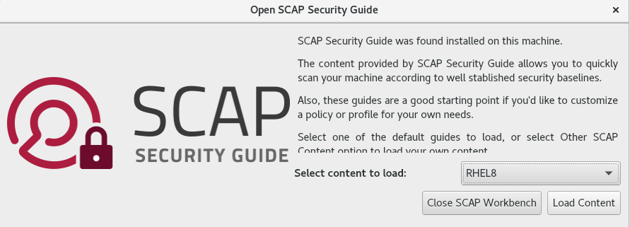
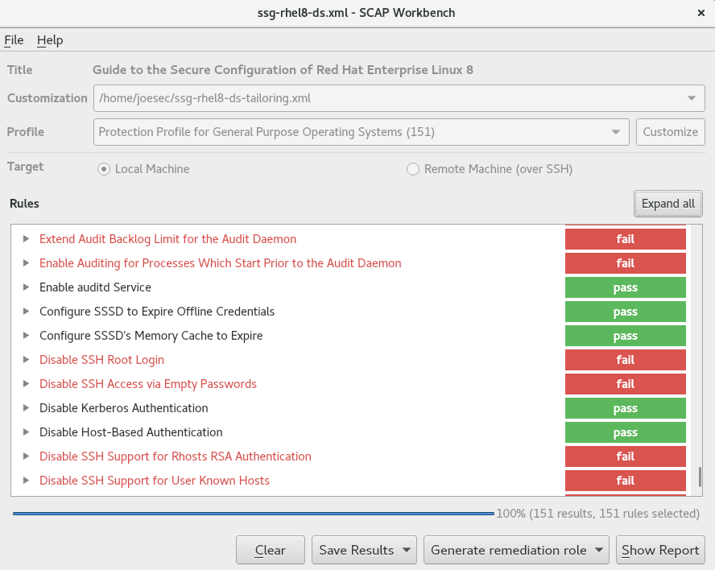
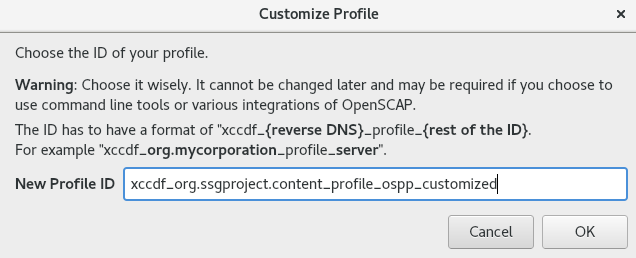
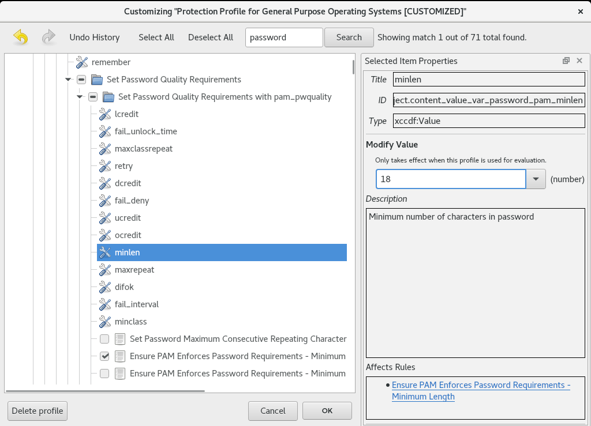

Security hardening
Securing Red Hat Enterprise Linux 8
Abstract
Providing feedback on Red Hat documentation
We appreciate your input on our documentation. Please let us know how we could make it better. To do so:
For simple comments on specific passages:
- Make sure you are viewing the documentation in the Multi-page HTML format. In addition, ensure you see the Feedback button in the upper right corner of the document.
- Use your mouse cursor to highlight the part of text that you want to comment on.
- Click the Add Feedback pop-up that appears below the highlighted text.
- Follow the displayed instructions.
For submitting more complex feedback, create a Bugzilla ticket:
- Go to the Bugzilla website.
- As the Component, use Documentation.
- Fill in the Description field with your suggestion for improvement. Include a link to the relevant part(s) of documentation.
- Click Submit Bug.
Chapter 1. Overview of security hardening in RHEL
Due to the increased reliance on powerful, networked computers to help run businesses and keep track of our personal information, entire industries have been formed around the practice of network and computer security. Enterprises have solicited the knowledge and skills of security experts to properly audit systems and tailor solutions to fit the operating requirements of their organization. Because most organizations are increasingly dynamic in nature, their workers are accessing critical company IT resources locally and remotely, hence the need for secure computing environments has become more pronounced.
Unfortunately, many organizations, as well as individual users, regard security as more of an afterthought, a process that is overlooked in favor of increased power, productivity, convenience, ease of use, and budgetary concerns. Proper security implementation is often enacted postmortem — after an unauthorized intrusion has already occurred. Taking the correct measures prior to connecting a site to an untrusted network, such as the Internet, is an effective means of thwarting many attempts at intrusion.
1.1. What is computer security?
Computer security is a general term that covers a wide area of computing and information processing. Industries that depend on computer systems and networks to conduct daily business transactions and access critical information regard their data as an important part of their overall assets. Several terms and metrics have entered our daily business vocabulary, such as total cost of ownership (TCO), return on investment (ROI), and quality of service (QoS). Using these metrics, industries can calculate aspects such as data integrity and high-availability (HA) as part of their planning and process management costs. In some industries, such as electronic commerce, the availability and trustworthiness of data can mean the difference between success and failure.
1.2. Standardizing security
Enterprises in every industry rely on regulations and rules that are set by standards-making bodies such as the American Medical Association (AMA) or the Institute of Electrical and Electronics Engineers (IEEE). The same concepts hold true for information security. Many security consultants and vendors agree upon the standard security model known as CIA, or Confidentiality, Integrity, and Availability. This three-tiered model is a generally accepted component to assessing risks of sensitive information and establishing security policy. The following describes the CIA model in further detail:
- Confidentiality — Sensitive information must be available only to a set of pre-defined individuals. Unauthorized transmission and usage of information should be restricted. For example, confidentiality of information ensures that a customer’s personal or financial information is not obtained by an unauthorized individual for malicious purposes such as identity theft or credit fraud.
- Integrity — Information should not be altered in ways that render it incomplete or incorrect. Unauthorized users should be restricted from the ability to modify or destroy sensitive information.
- Availability — Information should be accessible to authorized users any time that it is needed. Availability is a warranty that information can be obtained with an agreed-upon frequency and timeliness. This is often measured in terms of percentages and agreed to formally in Service Level Agreements (SLAs) used by network service providers and their enterprise clients.
1.3. Cryptographic software and certifications
Red Hat Enterprise Linux undergoes several security certifications, such as FIPS 140-2 or Common Criteria (CC), to ensure that industry best practices are followed.
The RHEL 8 core crypto components Knowledgebase article provides an overview of the Red Hat Enterprise Linux 8 core crypto components, documenting which are they, how are they selected, how are they integrated into the operating system, how do they support hardware security modules and smart cards, and how do crypto certifications apply to them.
1.4. Security controls
Computer security is often divided into three distinct master categories, commonly referred to as controls:
- Physical
- Technical
- Administrative
These three broad categories define the main objectives of proper security implementation. Within these controls are sub-categories that further detail the controls and how to implement them.
1.4.1. Physical controls
Physical control is the implementation of security measures in a defined structure used to deter or prevent unauthorized access to sensitive material. Examples of physical controls are:
- Closed-circuit surveillance cameras
- Motion or thermal alarm systems
- Security guards
- Picture IDs
- Locked and dead-bolted steel doors
- Biometrics (includes fingerprint, voice, face, iris, handwriting, and other automated methods used to recognize individuals)
1.4.2. Technical controls
Technical controls use technology as a basis for controlling the access and usage of sensitive data throughout a physical structure and over a network. Technical controls are far-reaching in scope and encompass such technologies as:
- Encryption
- Smart cards
- Network authentication
- Access control lists (ACLs)
- File integrity auditing software
1.4.3. Administrative controls
Administrative controls define the human factors of security. They involve all levels of personnel within an organization and determine which users have access to what resources and information by such means as:
- Training and awareness
- Disaster preparedness and recovery plans
- Personnel recruitment and separation strategies
- Personnel registration and accounting
1.5. Vulnerability assessment
Given time, resources, and motivation, an attacker can break into nearly any system. All of the security procedures and technologies currently available cannot guarantee that any systems are completely safe from intrusion. Routers help secure gateways to the Internet. Firewalls help secure the edge of the network. Virtual Private Networks safely pass data in an encrypted stream. Intrusion detection systems warn you of malicious activity. However, the success of each of these technologies is dependent upon a number of variables, including:
- The expertise of the staff responsible for configuring, monitoring, and maintaining the technologies.
- The ability to patch and update services and kernels quickly and efficiently.
- The ability of those responsible to keep constant vigilance over the network.
Given the dynamic state of data systems and technologies, securing corporate resources can be quite complex. Due to this complexity, it is often difficult to find expert resources for all of your systems. While it is possible to have personnel knowledgeable in many areas of information security at a high level, it is difficult to retain staff who are experts in more than a few subject areas. This is mainly because each subject area of information security requires constant attention and focus. Information security does not stand still.
A vulnerability assessment is an internal audit of your network and system security; the results of which indicate the confidentiality, integrity, and availability of your network. Typically, vulnerability assessment starts with a reconnaissance phase, during which important data regarding the target systems and resources is gathered. This phase leads to the system readiness phase, whereby the target is essentially checked for all known vulnerabilities. The readiness phase culminates in the reporting phase, where the findings are classified into categories of high, medium, and low risk; and methods for improving the security (or mitigating the risk of vulnerability) of the target are discussed
If you were to perform a vulnerability assessment of your home, you would likely check each door to your home to see if they are closed and locked. You would also check every window, making sure that they closed completely and latch correctly. This same concept applies to systems, networks, and electronic data. Malicious users are the thieves and vandals of your data. Focus on their tools, mentality, and motivations, and you can then react swiftly to their actions.
1.5.1. Defining assessment and testing
Vulnerability assessments may be broken down into one of two types: outside looking in and inside looking around.
When performing an outside-looking-in vulnerability assessment, you are attempting to compromise your systems from the outside. Being external to your company provides you with the cracker’s point of view. You see what a cracker sees — publicly-routable IP addresses, systems on your DMZ, external interfaces of your firewall, and more. DMZ stands for "demilitarized zone", which corresponds to a computer or small subnetwork that sits between a trusted internal network, such as a corporate private LAN, and an untrusted external network, such as the public Internet. Typically, the DMZ contains devices accessible to Internet traffic, such as web (HTTP) servers, FTP servers, SMTP (e-mail) servers and DNS servers.
When you perform an inside-looking-around vulnerability assessment, you are at an advantage since you are internal and your status is elevated to trusted. This is the point of view you and your co-workers have once logged on to your systems. You see print servers, file servers, databases, and other resources.
There are striking distinctions between the two types of vulnerability assessments. Being internal to your company gives you more privileges than an outsider. In most organizations, security is configured to keep intruders out. Very little is done to secure the internals of the organization (such as departmental firewalls, user-level access controls, and authentication procedures for internal resources). Typically, there are many more resources when looking around inside as most systems are internal to a company. Once you are outside the company, your status is untrusted. The systems and resources available to you externally are usually very limited.
Consider the difference between vulnerability assessments and penetration tests. Think of a vulnerability assessment as the first step to a penetration test. The information gleaned from the assessment is used for testing. Whereas the assessment is undertaken to check for holes and potential vulnerabilities, the penetration testing actually attempts to exploit the findings.
Assessing network infrastructure is a dynamic process. Security, both information and physical, is dynamic. Performing an assessment shows an overview, which can turn up false positives and false negatives. A false positive is a result, where the tool finds vulnerabilities which in reality do not exist. A false negative is when it omits actual vulnerabilities.
Security administrators are only as good as the tools they use and the knowledge they retain. Take any of the assessment tools currently available, run them against your system, and it is almost a guarantee that there are some false positives. Whether by program fault or user error, the result is the same. The tool may find false positives, or, even worse, false negatives.
Now that the difference between a vulnerability assessment and a penetration test is defined, take the findings of the assessment and review them carefully before conducting a penetration test as part of your new best practices approach.
Do not attempt to exploit vulnerabilities on production systems. Doing so can have adverse effects on productivity and efficiency of your systems and network.
The following list examines some of the benefits of performing vulnerability assessments.
- Creates proactive focus on information security.
- Finds potential exploits before crackers find them.
- Results in systems being kept up to date and patched.
- Promotes growth and aids in developing staff expertise.
- Abates financial loss and negative publicity.
1.5.2. Establishing a methodology for vulnerability assessment
To aid in the selection of tools for a vulnerability assessment, it is helpful to establish a vulnerability assessment methodology. Unfortunately, there is no predefined or industry approved methodology at this time; however, common sense and best practices can act as a sufficient guide.
What is the target? Are we looking at one server, or are we looking at our entire network and everything within the network? Are we external or internal to the company? The answers to these questions are important as they help determine not only which tools to select but also the manner in which they are used.
To learn more about establishing methodologies, see the following website:
- https://www.owasp.org/ — The Open Web Application Security Project
1.5.3. Vulnerability assessment tools
An assessment can start by using some form of an information-gathering tool. When assessing the entire network, map the layout first to find the hosts that are running. Once located, examine each host individually. Focusing on these hosts requires another set of tools. Knowing which tools to use may be the most crucial step in finding vulnerabilities.
The following tools are just a small sampling of the available tools:
-
Nmapis a popular tool that can be used to find host systems and open ports on those systems. To installNmapfrom theAppStreamrepository, enter theyum install nmapcommand as therootuser. See thenmap(1)man page for more information. -
The tools from the
OpenSCAPsuite, such as theoscapcommand-line utility and thescap-workbenchgraphical utility, provides a fully automated compliance audit. See Scanning the system for security compliance and vulnerabilities for more information. -
Advanced Intrusion Detection Environment (
AIDE) is a utility that creates a database of files on the system, and then uses that database to ensure file integrity and detect system intrusions. See Checking integrity with AIDE for more information.
1.6. Security threats
1.6.1. Threats to network security
Bad practices when configuring the following aspects of a network can increase the risk of an attack.
Insecure architectures
A misconfigured network is a primary entry point for unauthorized users. Leaving a trust-based, open local network vulnerable to the highly-insecure Internet is much like leaving a door ajar in a crime-ridden neighborhood — nothing may happen for an arbitrary amount of time, but someone exploits the opportunity eventually.
Broadcast networks
System administrators often fail to realize the importance of networking hardware in their security schemes. Simple hardware, such as hubs and routers, relies on the broadcast or non-switched principle; that is, whenever a node transmits data across the network to a recipient node, the hub or router sends a broadcast of the data packets until the recipient node receives and processes the data. This method is the most vulnerable to address resolution protocol (ARP) or media access control (MAC) address spoofing by both outside intruders and unauthorized users on local hosts.
Centralized servers
Another potential networking pitfall is the use of centralized computing. A common cost-cutting measure for many businesses is to consolidate all services to a single powerful machine. This can be convenient as it is easier to manage and costs considerably less than multiple-server configurations. However, a centralized server introduces a single point of failure on the network. If the central server is compromised, it may render the network completely useless or worse, prone to data manipulation or theft. In these situations, a central server becomes an open door that allows access to the entire network.
1.6.2. Threats to server security
Server security is as important as network security because servers often hold a great deal of an organization’s vital information. If a server is compromised, all of its contents may become available for the cracker to steal or manipulate at will. The following sections detail some of the main issues.
Unused services and open ports
A full installation of Red Hat Enterprise Linux 8 contains more than 1000 applications and library packages. However, most server administrators do not opt to install every single package in the distribution, preferring instead to install a base installation of packages, including several server applications.
A common occurrence among system administrators is to install the operating system without paying attention to what programs are actually being installed. This can be problematic because unneeded services may be installed, configured with the default settings, and possibly turned on. This can cause unwanted services, such as Telnet, DHCP, or DNS, to run on a server or workstation without the administrator realizing it, which in turn can cause unwanted traffic to the server or even a potential pathway into the system for crackers.
Unpatched services
Most server applications that are included in a default installation are solid, thoroughly tested pieces of software. Having been in use in production environments for many years, their code has been thoroughly refined and many of the bugs have been found and fixed.
However, there is no such thing as perfect software and there is always room for further refinement. Moreover, newer software is often not as rigorously tested as one might expect, because of its recent arrival to production environments or because it may not be as popular as other server software.
Developers and system administrators often find exploitable bugs in server applications and publish the information on bug tracking and security-related websites such as the Bugtraq mailing list (http://www.securityfocus.com) or the Computer Emergency Response Team (CERT) website (http://www.cert.org). Although these mechanisms are an effective way of alerting the community to security vulnerabilities, it is up to system administrators to patch their systems promptly. This is particularly true because crackers have access to these same vulnerability tracking services and will use the information to crack unpatched systems whenever they can. Good system administration requires vigilance, constant bug tracking, and proper system maintenance to ensure a more secure computing environment.
Inattentive administration
Administrators who fail to patch their systems are one of the greatest threats to server security. This applies as much to inexperienced administrators as it does to overconfident or amotivated administrators.
Some administrators fail to patch their servers and workstations, while others fail to watch log messages from the system kernel or network traffic. Another common error is when default passwords or keys to services are left unchanged. For example, some databases have default administration passwords because the database developers assume that the system administrator changes these passwords immediately after installation. If a database administrator fails to change this password, even an inexperienced cracker can use a widely-known default password to gain administrative privileges to the database. These are only a few examples of how inattentive administration can lead to compromised servers.
Inherently insecure services
Even the most vigilant organization can fall victim to vulnerabilities if the network services they choose are inherently insecure. For instance, there are many services developed under the assumption that they are used over trusted networks; however, this assumption fails as soon as the service becomes available over the Internet — which is itself inherently untrusted.
One category of insecure network services are those that require unencrypted user names and passwords for authentication. Telnet and FTP are two such services. If packet sniffing software is monitoring traffic between the remote user and such a service user names and passwords can be easily intercepted.
Inherently, such services can also more easily fall prey to what the security industry terms the man-in-the-middle attack. In this type of attack, a cracker redirects network traffic by tricking a cracked name server on the network to point to his machine instead of the intended server. Once someone opens a remote session to the server, the attacker’s machine acts as an invisible conduit, sitting quietly between the remote service and the unsuspecting user capturing information. In this way a cracker can gather administrative passwords and raw data without the server or the user realizing it.
Another category of insecure services include network file systems and information services such as NFS or NIS, which are developed explicitly for LAN usage but are, unfortunately, extended to include WANs (for remote users). NFS does not, by default, have any authentication or security mechanisms configured to prevent a cracker from mounting the NFS share and accessing anything contained therein. NIS, as well, has vital information that must be known by every computer on a network, including passwords and file permissions, within a plain text ASCII or DBM (ASCII-derived) database. A cracker who gains access to this database can then access every user account on a network, including the administrator’s account.
By default, Red Hat Enterprise Linux 8 is released with all such services turned off. However, since administrators often find themselves forced to use these services, careful configuration is critical.
1.6.3. Threats to workstation and home PC security
Workstations and home PCs may not be as prone to attack as networks or servers, but since they often contain sensitive data, such as credit card information, they are targeted by system crackers. Workstations can also be co-opted without the user’s knowledge and used by attackers as "slave" machines in coordinated attacks. For these reasons, knowing the vulnerabilities of a workstation can save users the headache of reinstalling the operating system, or worse, recovering from data theft.
Bad passwords
Bad passwords are one of the easiest ways for an attacker to gain access to a system.
Vulnerable client applications
Although an administrator may have a fully secure and patched server, that does not mean remote users are secure when accessing it. For instance, if the server offers Telnet or FTP services over a public network, an attacker can capture the plain text user names and passwords as they pass over the network, and then use the account information to access the remote user’s workstation.
Even when using secure protocols, such as SSH, a remote user may be vulnerable to certain attacks if they do not keep their client applications updated. For instance, SSH protocol version 1 clients are vulnerable to an X-forwarding attack from malicious SSH servers. Once connected to the server, the attacker can quietly capture any keystrokes and mouse clicks made by the client over the network. This problem was fixed in the SSH version 2 protocol, but it is up to the user to keep track of what applications have such vulnerabilities and update them as necessary.
1.7. Common exploits and attacks
Table 1.1, “Common exploits” details some of the most common exploits and entry points used by intruders to access organizational network resources. Key to these common exploits are the explanations of how they are performed and how administrators can properly safeguard their network against such attacks.
Table 1.1. Common exploits
| Exploit | Description | Notes |
|---|---|---|
| Null or default passwords | Leaving administrative passwords blank or using a default password set by the product vendor. This is most common in hardware such as routers and firewalls, but some services that run on Linux can contain default administrator passwords as well (though Red Hat Enterprise Linux 8 does not ship with them). | Commonly associated with networking hardware such as routers, firewalls, VPNs, and network attached storage (NAS) appliances. Common in many legacy operating systems, especially those that bundle services (such as UNIX and Windows.) Administrators sometimes create privileged user accounts in a rush and leave the password null, creating a perfect entry point for malicious users who discover the account. |
| Default shared keys | Secure services sometimes package default security keys for development or evaluation testing purposes. If these keys are left unchanged and are placed in a production environment on the Internet, all users with the same default keys have access to that shared-key resource, and any sensitive information that it contains. | Most common in wireless access points and preconfigured secure server appliances. |
| IP spoofing | A remote machine acts as a node on your local network, finds vulnerabilities with your servers, and installs a backdoor program or Trojan horse to gain control over your network resources. | Spoofing is quite difficult as it involves the attacker predicting TCP/IP sequence numbers to coordinate a connection to target systems, but several tools are available to assist crackers in performing such a vulnerability.
Depends on target system running services (such as |
| Eavesdropping | Collecting data that passes between two active nodes on a network by eavesdropping on the connection between the two nodes. | This type of attack works mostly with plain text transmission protocols such as Telnet, FTP, and HTTP transfers. Remote attacker must have access to a compromised system on a LAN in order to perform such an attack; usually the cracker has used an active attack (such as IP spoofing or man-in-the-middle) to compromise a system on the LAN. Preventative measures include services with cryptographic key exchange, one-time passwords, or encrypted authentication to prevent password snooping; strong encryption during transmission is also advised. |
| Service vulnerabilities | An attacker finds a flaw or loophole in a service run over the Internet; through this vulnerability, the attacker compromises the entire system and any data that it may hold, and could possibly compromise other systems on the network. | HTTP-based services such as CGI are vulnerable to remote command execution and even interactive shell access. Even if the HTTP service runs as a non-privileged user such as "nobody", information such as configuration files and network maps can be read, or the attacker can start a denial of service attack which drains system resources or renders it unavailable to other users. Services sometimes can have vulnerabilities that go unnoticed during development and testing; these vulnerabilities (such as buffer overflows, where attackers crash a service using arbitrary values that fill the memory buffer of an application, giving the attacker an interactive command prompt from which they may execute arbitrary commands) can give complete administrative control to an attacker. Administrators should make sure that services do not run as the root user, and should stay vigilant of patches and errata updates for applications from vendors or security organizations such as CERT and CVE. |
| Application vulnerabilities | Attackers find faults in desktop and workstation applications (such as email clients) and execute arbitrary code, implant Trojan horses for future compromise, or crash systems. Further exploitation can occur if the compromised workstation has administrative privileges on the rest of the network. | Workstations and desktops are more prone to exploitation as workers do not have the expertise or experience to prevent or detect a compromise; it is imperative to inform individuals of the risks they are taking when they install unauthorized software or open unsolicited email attachments. Safeguards can be implemented such that email client software does not automatically open or execute attachments. Additionally, the automatic update of workstation software using Red Hat Network; or other system management services can alleviate the burdens of multi-seat security deployments. |
| Denial of Service (DoS) attacks | Attacker or group of attackers coordinate against an organization’s network or server resources by sending unauthorized packets to the target host (either server, router, or workstation). This forces the resource to become unavailable to legitimate users. | The most reported DoS case in the US occurred in 2000. Several highly-trafficked commercial and government sites were rendered unavailable by a coordinated ping flood attack using several compromised systems with high bandwidth connections acting as zombies, or redirected broadcast nodes. Source packets are usually forged (as well as rebroadcast), making investigation as to the true source of the attack difficult.
Advances in ingress filtering (IETF rfc2267) using |
Chapter 2. Securing RHEL during installation
Security begins even before you start the installation of Red Hat Enterprise Linux. Configuring your system securely from the beginning makes it easier to implement additional security settings later.
2.1. BIOS and UEFI security
Password protection for the BIOS (or BIOS equivalent) and the boot loader can prevent unauthorized users who have physical access to systems from booting using removable media or obtaining root privileges through single user mode. The security measures you should take to protect against such attacks depends both on the sensitivity of the information on the workstation and the location of the machine.
For example, if a machine is used in a trade show and contains no sensitive information, then it may not be critical to prevent such attacks. However, if an employee’s laptop with private, unencrypted SSH keys for the corporate network is left unattended at that same trade show, it could lead to a major security breach with ramifications for the entire company.
If the workstation is located in a place where only authorized or trusted people have access, however, then securing the BIOS or the boot loader may not be necessary.
2.1.1. BIOS passwords
The two primary reasons for password protecting the BIOS of a computer are[1]:
- Preventing changes to BIOS settings — If an intruder has access to the BIOS, they can set it to boot from a CD-ROM or a flash drive. This makes it possible for them to enter rescue mode or single user mode, which in turn allows them to start arbitrary processes on the system or copy sensitive data.
- Preventing system booting — Some BIOSes allow password protection of the boot process. When activated, an attacker is forced to enter a password before the BIOS launches the boot loader.
Because the methods for setting a BIOS password vary between computer manufacturers, consult the computer’s manual for specific instructions.
If you forget the BIOS password, it can either be reset with jumpers on the motherboard or by disconnecting the CMOS battery. For this reason, it is good practice to lock the computer case if possible. However, consult the manual for the computer or motherboard before attempting to disconnect the CMOS battery.
2.1.1.1. Non-BIOS-based systems security
Other systems and architectures use different programs to perform low-level tasks roughly equivalent to those of the BIOS on x86 systems. For example, the Unified Extensible Firmware Interface (UEFI) shell.
For instructions on password protecting BIOS-like programs, see the manufacturer’s instructions.
2.2. Disk partitioning
Red Hat recommends creating separate partitions for the /boot, /, /home, /tmp, and /var/tmp/ directories. The reasons for each are different, and we will address each partition.
/boot- This partition is the first partition that is read by the system during boot up. The boot loader and kernel images that are used to boot your system into Red Hat Enterprise Linux 8 are stored in this partition. This partition should not be encrypted. If this partition is included in / and that partition is encrypted or otherwise becomes unavailable then your system will not be able to boot.
/home-
When user data (
/home) is stored in/instead of in a separate partition, the partition can fill up causing the operating system to become unstable. Also, when upgrading your system to the next version of Red Hat Enterprise Linux 8 it is a lot easier when you can keep your data in the/homepartition as it will not be overwritten during installation. If the root partition (/) becomes corrupt your data could be lost forever. By using a separate partition there is slightly more protection against data loss. You can also target this partition for frequent backups. /tmpand/var/tmp/-
Both the
/tmpand/var/tmp/directories are used to store data that does not need to be stored for a long period of time. However, if a lot of data floods one of these directories it can consume all of your storage space. If this happens and these directories are stored within/then your system could become unstable and crash. For this reason, moving these directories into their own partitions is a good idea.
During the installation process, you have an option to encrypt partitions. You must supply a passphrase. This passphrase serves as a key to unlock the bulk encryption key, which is used to secure the partition’s data.
2.3. Restricting network connectivity during the installation process
When installing Red Hat Enterprise Linux 8, the installation medium represents a snapshot of the system at a particular time. Because of this, it may not be up-to-date with the latest security fixes and may be vulnerable to certain issues that were fixed only after the system provided by the installation medium was released.
When installing a potentially vulnerable operating system, always limit exposure only to the closest necessary network zone. The safest choice is the “no network” zone, which means to leave your machine disconnected during the installation process. In some cases, a LAN or intranet connection is sufficient while the Internet connection is the riskiest. To follow the best security practices, choose the closest zone with your repository while installing Red Hat Enterprise Linux 8 from a network.
2.4. Installing the minimum amount of packages required
It is best practice to install only the packages you will use because each piece of software on your computer could possibly contain a vulnerability. If you are installing from the DVD media, take the opportunity to select exactly what packages you want to install during the installation. If you find you need another package, you can always add it to the system later.
2.5. Post-installation procedures
The following steps are the security-related procedures that should be performed immediately after installation of Red Hat Enterprise Linux.
Update your system. Enter the following command as root:
# yum update
Even though the firewall service,
firewalld, is automatically enabled with the installation of Red Hat Enterprise Linux, there are scenarios where it might be explicitly disabled, for example in the kickstart configuration. In such a case, it is recommended to consider re-enabling the firewall.To start
firewalldenter the following commands as root:# systemctl start firewalld # systemctl enable firewalld
To enhance security, disable services you do not need. For example, if there are no printers installed on your computer, disable the
cupsservice using the following command:# systemctl disable cups
To review active services, enter the following command:
$
systemctl list-units | grep service
Chapter 3. Using system-wide cryptographic policies
Crypto policies is a system component that configures the core cryptographic subsystems, covering the TLS, IPSec, SSH, DNSSec, and Kerberos protocols. It provides a small set of policies, which the administrator can select.
3.1. System-wide cryptographic policies
Once a system-wide policy is set up, applications in RHEL follow it and refuse to use algorithms and protocols that do not meet the policy, unless you explicitly request the application to do so. That is, the policy applies to the default behavior of applications when running with the system-provided configuration but you can override it if required so.
Red Hat Enterprise Linux 8 contains the following policy levels:
|
| The default system-wide cryptographic policy level offers secure settings for current threat models. It allows the TLS 1.2 and 1.3 protocols, as well as the IKEv2 and SSH2 protocols. The RSA keys and Diffie-Hellman parameters are accepted if they are at least 2048 bits long. |
|
|
This policy ensures maximum compatibility with Red Hat Enterprise Linux 5 and earlier; it is less secure due to an increased attack surface. In addition to the |
|
| A conservative security level that is believed to withstand any near-term future attacks. This level does not allow the use of SHA-1 in signature algorithms. The RSA keys and Diffie-Hellman parameters are accepted if they are at least 3072 bits long. |
|
|
A policy level that conforms with the FIPS140-2 requirements. This is used internally by the |
The specific algorithms and ciphers described in the policy levels as allowed are available only if an application supports them.
Tool for managing crypto policies
To view or change the current system-wide cryptographic policy, use the update-crypto-policies tool, for example:
$ update-crypto-policies --show DEFAULT # update-crypto-policies --set FUTURE Setting system policy to FUTURE
To ensure that the change of the cryptographic policy is applied, restart the system.
Strong crypto defaults by removing insecure cipher suites and protocols
The following list contains cipher suites and protocols removed from the core cryptographic libraries in RHEL 8. They are not present in the sources, or their support is disabled during the build, so applications cannot use them.
- DES (since RHEL 7)
- All export grade cipher suites (since RHEL 7)
- MD5 in signatures (since RHEL 7)
- SSLv2 (since RHEL 7)
- SSLv3 (since RHEL 8)
- All ECC curves < 224 bits (since RHEL 6)
- All binary field ECC curves (since RHEL 6)
Cipher suites and protocols disabled in all policy levels
The following cipher suites and protocols are disabled in all crypto policy levels. They can be enabled only by an explicit configuration of individual applications.
- DH with parameters < 1024 bits
- RSA with key size < 1024 bits
- Camellia
- ARIA
- SEED
- IDEA
- Integrity-only cipher suites
- TLS CBC mode cipher suites using SHA-384 HMAC
- AES-CCM8
- All ECC curves incompatible with TLS 1.3, including secp256k1
- IKEv1 (since RHEL 8)
Cipher suites and protocols enabled in the crypto-policies levels
The following table shows the enabled cipher suites and protocols in all four crypto-policies levels.
LEGACY | DEFAULT | FIPS | FUTURE | |
|---|---|---|---|---|
| IKEv1 | no | no | no | no |
| 3DES | yes | no | no | no |
| RC4 | yes | no | no | no |
| DH | min. 1024-bit | min. 2048-bit | min. 2048-bit | min. 3072-bit |
| RSA | min. 1024-bit | min. 2048-bit | min. 2048-bit | min. 3072-bit |
| DSA | yes | no | no | no |
| TLS v1.0 | yes | no | no | no |
| TLS v1.1 | yes | no | no | no |
| SHA-1 in digital signatures | yes | yes | no | no |
| CBC mode ciphers | yes | yes | yes | no |
| Symmetric ciphers with keys < 256 bits | yes | yes | yes | no |
| SHA-1 and SHA-224 signatures in certificates | yes | yes | yes | no |
Additional resources
-
For more details, see the
update-crypto-policies(8)man page.
3.2. Switching the system-wide cryptographic policy to mode compatible with earlier releases
The default system-wide cryptographic policy in Red Hat Enterprise Linux 8 does not allow communication using older, insecure protocols. For environments that require to be compatible with Red Hat Enterprise Linux 5 and in some cases also with earlier releases, the less secure LEGACY policy level is available.
Switching to the LEGACY policy level results in a less secure system and applications.
Procedure
To switch the system-wide cryptographic policy to the
LEGACYlevel, enter the following command asroot:# update-crypto-policies --set LEGACY Setting system policy to LEGACY
Additional resources
-
For the list of available cryptographic policy levels, see the
update-crypto-policies(8)man page.
3.3. Switching the system to FIPS mode
The system-wide cryptographic policies contain a policy level that enables cryptographic modules self-checks in accordance with the requirements by Federal Information Processing Standard (FIPS) Publication 140-2. The fips-mode-setup tool that enables or disables FIPS mode internally uses the FIPS system-wide cryptographic policy level.
Procedure
To switch the system to FIPS mode in RHEL 8:
# fips-mode-setup --enable Setting system policy to FIPS FIPS mode will be enabled. Please reboot the system for the setting to take effect.Restart your system to allow the kernel to switch to FIPS mode:
# reboot
Verification steps
After the restart, you can check the current state of FIPS mode:
# fips-mode-setup --check FIPS mode is enabled.
Additional resources
-
The
fips-mode-setup(8)man page. - List of RHEL 8 applications using cryptography that are not compliant with FIPS 140-2
- For more details on FIPS 140-2, see the Security Requirements for Cryptographic Modules on the National Institute of Standards and Technology (NIST) web site.
3.4. Enabling FIPS mode in a container
To enable cryptographic modules self-checks in accordance with the requirements by Federal Information Processing Standard (FIPS) Publication 140-2 in a container:
Prerequisites
- The host system must be switched in FIPS mode first, see Switching the system to FIPS mode.
Procedure
-
Mount the
/etc/system-fipsfile on the container from the host. Set the FIPS cryptographic policy level in the container:
$ update-crypto-policies --set FIPS
RHEL 8.2 introduced an alternative method for switching a container to FIPS mode. It requires only using the following command in the container:
# mount --bind /usr/share/crypto-policies/back-ends/FIPS /etc/crypto-policies/back-ends
In RHEL 8, the fips-mode-setup command does not work properly in a container and it cannot be used to enable or check FIPS mode in this scenario.
3.5. Excluding an application from following system-wide crypto policies
You can customize cryptographic settings used by your application preferably by configuring supported cipher suites and protocols directly in the application.
You can also remove a symlink related to your application from the /etc/crypto-policies/back-ends directory and replace it with your customized cryptographic settings. This configuration prevents the use of system-wide cryptographic policies for applications that use the excluded back end. Furthermore, this modification is not supported by Red Hat.
3.5.1. Examples of opting out of system-wide crypto policies
wget
To customize cryptographic settings used by the wget network downloader, use --secure-protocol and --ciphers options. For example:
# wget --secure-protocol=TLSv1_1 --ciphers="SECURE128" https://example.com
See the HTTPS (SSL/TLS) Options section of the wget(1) man page for more information.
curl
To specify ciphers used by the curl tool, use the --ciphers option and provide a colon-separated list of ciphers as a value. For example:
# curl https://example.com --ciphers DES-CBC3-SHA:RSA-DES-CBC3-SHA
See the curl(1) man page for more information.
Firefox
Even though you cannot opt out of system-wide cryptographic policies in the Firefox web browser, you can further restrict supported ciphers and TLS versions in Firefox’s Configuration Editor. Type about:config in the address bar and change the value of the security.tls.version.min option as required. Setting security.tls.version.min to 1 allows TLS 1.0 as the minimum required, security.tls.version.min 2 enables TLS 1.1, and so on.
OpenSSH
To opt out of the system-wide crypto policies for your OpenSSH server, uncomment the line with the CRYPTO_POLICY= variable in the /etc/sysconfig/sshd file. After this change, values that you specify in the Ciphers, MACs, KexAlgoritms, and GSSAPIKexAlgorithms sections in the /etc/ssh/sshd_config file are not overridden. See the sshd_config(5) man page for more information.
Libreswan
To allow the Libreswan IPsec suite to use the IKEv1 protocol, comment out the following line in the /etc/ipsec.conf file:
include /etc/crypto-policies/back-ends/libreswan.config
Then add the ikev2=never option to your connection configuration. See the ipsec.conf(5) man page for more information.
Additional resources
-
For more details, see the
update-crypto-policies(8)man page.
3.6. Customizing system-wide cryptographic policies with policy modifiers
Use this procedure to adjust certain algorithms or protocols of any system-wide cryptographic policy level or a full custom policy.
Customization of system-wide cryptographic policies is available from RHEL 8.2.
Procedure
Create policy modules that contain your adjustments, for example:
# cat /etc/crypto-policies/policies/modules/MYCRYPTO1.pmod sha1_in_certs = 0 min_rsa_size = 3072 # cat /etc/crypto-policies/policies/modules/NO-CAMELLIA.pmod cipher = -CAMELLIA-256-GCM -CAMELLIA-256-CBC -CAMELLIA-128-GCM -CAMELLIA-128-CBC
ImportantUse upper-case letters in file names of policy modules.
Apply your policy adjustments to the
DEFAULTsystem-wide cryptographic policy level:# update-crypto-policies --set DEFAULT:MYCRYPTO1:NO-CAMELLIATo make your cryptographic settings effective for already running services and applications, restart the system:
# reboot
Additional resources
-
For more details, see the
Custom Policiessection in theupdate-crypto-policies(8)man page and theCrypto Policy Definition Formatsection in theupdate-crypto-policies(8)man page.
3.7. Creating and setting a custom system-wide cryptographic policy
The following steps demonstrate customizing the system-wide cryptographic policies by a complete policy file.
Customization of system-wide cryptographic policies is available from RHEL 8.2.
Procedure
Create a policy file for your customizations:
# cd /etc/crypto-policies/policies/ # touch MYPOLICY.pol
Alternatively, start by copying one of the four predefined policy levels:
# cp /usr/share/crypto-policies/DEFAULT.pol /etc/crypto-policies/policies/MYPOLICY.polEdit the file with your custom cryptographic policy in a text editor of your choice to fit your requirements, for example:
# vi /etc/crypto-policies/policies/MYPOLICY.polSwitch the system-wide cryptographic policy to your custom level:
# update-crypto-policies --set MYPOLICYTo make your cryptographic settings effective for already running services and applications, restart the system:
# reboot
Additional resources
-
For more details, see the
Custom Policiessection in theupdate-crypto-policies(8)man page and theCrypto Policy Definition Formatsection in theupdate-crypto-policies(8)man page.
Chapter 4. Configuring applications to use cryptographic hardware through PKCS #11
Separating parts of your secret information on dedicated cryptographic devices, such as smart cards and cryptographic tokens for end-user authentication and hardware security modules (HSM) for server applications, provides an additional layer of security. In Red Hat Enterprise Linux 8, support for cryptographic hardware through the PKCS #11 API is consistent across different applications, and the isolation of secrets on cryptographic hardware is not a complicated task.
4.1. Cryptographic hardware support through PKCS #11
PKCS #11 (Public-Key Cryptography Standard) defines an application programming interface (API) to cryptographic devices that hold cryptographic information and perform cryptographic functions. These devices are called tokens, and they can be implemented in a hardware or software form.
A PKCS #11 token can store various object types including a certificate; a data object; and a public, private, or secret key. These objects are uniquely identifiable through the PKCS #11 URI scheme.
A PKCS #11 URI is a standard way to identify a specific object in a PKCS #11 module according to the object attributes. This enables you to configure all libraries and applications with the same configuration string in the form of a URI.
Red Hat Enterprise Linux 8 provides the OpenSC PKCS #11 driver for smart cards by default. However, hardware tokens and HSMs can have their own PKCS #11 modules that do not have their counterpart in Red Hat Enterprise Linux. You can register such PKCS #11 modules with the p11-kit tool, which acts as a wrapper over the registered smart card drivers in the system.
To make your own PKCS #11 module work on the system, add a new text file to the /etc/pkcs11/modules/ directory
You can add your own PKCS #11 module into the system by creating a new text file in the /etc/pkcs11/modules/ directory. For example, the OpenSC configuration file in p11-kit looks as follows:
$ cat /usr/share/p11-kit/modules/opensc.module
module: opensc-pkcs11.so4.2. Using SSH keys stored on a smart card
Red Hat Enterprise Linux 8 enables you to use RSA and ECDSA keys stored on a smart card on OpenSSH clients. Use this procedure to enable authentication using a smart card instead of using a password.
Prerequisites
-
On the client side, the
openscpackage is installed and thepcscdservice is running.
Procedure
List all keys provided by the OpenSC PKCS #11 module including their PKCS #11 URIs and save the output to the keys.pub file:
$ ssh-keygen -D pkcs11: > keys.pub $ ssh-keygen -D pkcs11: ssh-rsa AAAAB3NzaC1yc2E...KKZMzcQZzx pkcs11:id=%02;object=SIGN%20pubkey;token=SSH%20key;manufacturer=piv_II?module-path=/usr/lib64/pkcs11/opensc-pkcs11.so ecdsa-sha2-nistp256 AAA...J0hkYnnsM= pkcs11:id=%01;object=PIV%20AUTH%20pubkey;token=SSH%20key;manufacturer=piv_II?module-path=/usr/lib64/pkcs11/opensc-pkcs11.so
To enable authentication using a smart card on a remote server (example.com), transfer the public key to the remote server. Use the
ssh-copy-idcommand with keys.pub created in the previous step:$ ssh-copy-id -f -i keys.pub username@example.comTo connect to example.com using the ECDSA key from the output of the
ssh-keygen -Dcommand in step 1, you can use just a subset of the URI, which uniquely references your key, for example:$ ssh -i "pkcs11:id=%01?module-path=/usr/lib64/pkcs11/opensc-pkcs11.so" example.com Enter PIN for 'SSH key': [example.com] $You can use the same URI string in the
~/.ssh/configfile to make the configuration permanent:$ cat ~/.ssh/config IdentityFile "pkcs11:id=%01?module-path=/usr/lib64/pkcs11/opensc-pkcs11.so" $ ssh example.com Enter PIN for 'SSH key': [example.com] $
Because OpenSSH uses the
p11-kit-proxywrapper and the OpenSC PKCS #11 module is registered to PKCS#11 Kit, you can simplify the previous commands:$ ssh -i "pkcs11:id=%01" example.com Enter PIN for 'SSH key': [example.com] $
If you skip the id= part of a PKCS #11 URI, OpenSSH loads all keys that are available in the proxy module. This can reduce the amount of typing required:
$ ssh -i pkcs11: example.com
Enter PIN for 'SSH key':
[example.com] $Additional resources
- Fedora 28: Better smart card support in OpenSSH
-
p11-kit(8)man page -
ssh(1)man page -
ssh-keygen(1)man page -
opensc.conf(5)man page -
pcscd(8)man page
4.3. Using HSMs protecting private keys in Apache and Nginx
The Apache and Nginx HTTP servers can work with private keys stored on hardware security modules (HSMs), which helps to prevent the keys' disclosure and man-in-the-middle attacks. Note that this usually requires high-performance HSMs for busy servers.
Apache HTTP server
For secure communication in the form of the HTTPS protocol, the Apache HTTP server (httpd) uses the OpenSSL library. OpenSSL does not support PKCS #11 natively. To utilize HSMs, you have to install the openssl-pkcs11 package, which provides access to PKCS #11 modules through the engine interface. You can use a PKCS #11 URI instead of a regular file name to specify a server key and a certificate in the /etc/httpd/conf.d/ssl.conf configuration file, for example:
SSLCertificateFile "pkcs11:id=%01;token=softhsm;type=cert" SSLCertificateKeyFile "pkcs11:id=%01;token=softhsm;type=private?pin-value=111111"
Install the httpd-manual package to obtain complete documentation for the Apache HTTP Server, including TLS configuration. The directives available in the /etc/httpd/conf.d/ssl.conf configuration file are described in detail in /usr/share/httpd/manual/mod/mod_ssl.html.
Nginx HTTP and proxy server
Because Nginx also uses the OpenSSL for cryptographic operations, support for PKCS #11 must go through the openssl-pkcs11 engine. Nginx currently supports only loading private keys from an HSM, and a certificate must be provided separately as a regular file. Modify the ssl_certificate and ssl_certificate_key options in the server section of the /etc/nginx/nginx.conf configuration file:
ssl_certificate /path/to/cert.pem ssl_certificate_key "engine:pkcs11:pkcs11:token=softhsm;id=%01;type=private?pin-value=111111";
Note that the engine:pkcs11: prefix is needed for the PKCS #11 URI in the Nginx configuration file. This is because the other pkcs11 prefix refers to the engine name.
4.4. Configuring applications to authenticate using certificates from smart cards
The
wgetnetwork downloader enables you to specify PKCS #11 URIs instead of paths to locally stored private keys, and thus simplifies creating scripts for tasks that require safely stored private keys and certificates. For example:$ wget --private-key 'pkcs11:token=softhsm;id=%01;type=private?pin-value=111111' --certificate 'pkcs11:token=softhsm;id=%01;type=cert' https://example.com/
See the
wget(1)man page for more information.Specifying PKCS #11 URI for use by the
curltool is analogous:$ curl --key 'pkcs11:token=softhsm;id=%01;type=private?pin-value=111111' --cert 'pkcs11:token=softhsm;id=%01;type=cert' https://example.com/
See the
curl(1)man page for more information.-
The
Firefoxweb browser automatically loads thep11-kit-proxymodule. This means that every supported smart card in the system is automatically detected. For using TLS client authentication, no additional setup is required and keys from a smart card are automatically used when a server requests them.
Using PKCS #11 URIs in custom applications
If your application uses the GnuTLS or NSS library, support for PKCS #11 URIs is ensured by their built-in support for PKCS #11. Also, applications relying on the OpenSSL library can access cryptographic hardware modules thanks to the openssl-pkcs11 engine.
With applications that require working with private keys on smart cards and that do not use NSS, GnuTLS, or OpenSSL, use p11-kit to implement registering PKCS #11 modules.
See the p11-kit(8) man page for more information.
Chapter 6. Scanning the system for security compliance and vulnerabilities
A compliance audit is a process of figuring out whether a given object follows all the rules written out in a compliance policy. The compliance policy is defined by security professionals who specify required settings, often in the form of a checklist, that are to be used in the computing environment.
The compliance policy can vary substantially across organizations and even across different systems within the same organization. Differences among these policies are based on the purpose of these systems and its importance for the organization. The custom software settings and deployment characteristics also raise a need for custom policy checklists.
6.1. Security compliance tools in RHEL
Red Hat Enterprise Linux provides tools that allow for a fully automated compliance audit. These tools are based on the Security Content Automation Protocol (SCAP) standard and are designed for automated tailoring of compliance policies.
-
SCAP Workbench - The
scap-workbenchgraphical utility is designed to perform configuration and vulnerability scans on a single local or remote system. It can be also used to generate security reports based on these scans and evaluations. -
OpenSCAP - The
oscapcommand-line utility is designed to perform configuration and vulnerability scans on a local system, to validate security compliance content, and to generate reports and guides based on these scans and evaluations. -
SCAP Security Guide (SSG) - The
scap-security-guidepackage provides the latest collection of security policies for Linux systems. The guidance consists of a catalog of practical hardening advice, linked to government requirements where applicable. The project bridges the gap between generalized policy requirements and specific implementation guidelines. -
Script Check Engine (SCE) - SCE is an extension to the SCAP protocol that allows administrators to write their security content using a scripting language, such as Bash, Python, or Ruby. The SCE extension is provided in the
openscap-engine-scepackage.
If you require performing automated compliance audits on multiple systems remotely, you can utilize OpenSCAP solution for Red Hat Satellite.
Additional resources
-
oscap(8)- The manual page for theoscapcommand-line utility provides a complete list of available options and their usage explanation. -
scap-workbench(8)- The manual page for theSCAP Workbenchapplication provides a basic information about the application as well as some links to potential sources of SCAP content. -
scap-security-guide(8)- The manual page for thescap-security-guideproject provides further documentation about the various available SCAP security profiles. Examples how to utilize the provided benchmarks using the OpenSCAP utility are provided as well. - For more details about using OpenSCAP with Red Hat Satellite, see Security Compliance Management in the Administering Red Hat Satellite Guide.
6.2. Red Hat Security Advisories OVAL feed
Red Hat Enterprise Linux security auditing capabilities are based on the Security Content Automation Protocol (SCAP) standard. SCAP is a multi-purpose framework of specifications that supports automated configuration, vulnerability and patch checking, technical control compliance activities, and security measurement.
SCAP specifications create an ecosystem where the format of security content is well known and standardized while the implementation of the scanner or policy editor is not mandated. Such a status enables organizations to build their security policy (SCAP content) once, no matter how many security vendors do they employ.
The Open Vulnerability Assessment Language (OVAL) is the essential and oldest component of SCAP. Unlike other tools or custom scripts, the OVAL language describes a required state of resources in a declarative manner. The OVAL language code is never executed directly but by means of an OVAL interpreter tool called scanner. The declarative nature of OVAL ensures that the state of the assessed system is not accidentally modified.
Like all other SCAP components, OVAL is based on XML. The SCAP standard defines several document formats. Each of them includes a different kind of information and serves a different purpose.
Red Hat Product Security helps customers evaluate and manage risk by tracking and investigating all security issues affecting Red Hat customers. It provides timely and concise patches and security advisories on the Red Hat Customer Portal. Red Hat creates and supports OVAL patch definitions, providing machine-readable versions of our security advisories.
The RHSA OVAL definitions are available individually and as a complete package, and are updated within an hour of a new security advisory being made available on the Red Hat Customer Portal.
Each OVAL patch definition maps one-to-one to a Red Hat Security Advisory (RHSA). Since an RHSA can contain fixes for multiple vulnerabilities, each vulnerability is listed separately by its Common Vulnerabilities and Exposures (CVE) name and has a link to its entry in our public bug database.
The RHSA OVAL definitions are designed to check for vulnerable versions of RPM packages installed on a system. It is possible to extend these definitions to include further checks - for instance, to find out if the packages are being used in a vulnerable configuration. These definitions are designed to cover software and updates shipped by Red Hat. Additional definitions are required to detect the patch status of third-party software.
6.3. Scanning the system for vulnerabilities
The oscap command-line utility enables users to scan local systems, validate security compliance content, and generate reports and guides based on these scans and evaluations. This utility serves as a front end to the OpenSCAP library and groups its functionalities to modules (sub-commands) based on the type of SCAP content it processes.
Prerequisites
-
The
AppStreamrepository is enabled.
Procedure
Install the
openscap-scannerpackage:# yum install openscap-scannerDownload the latest RHSA OVAL definitions for your system:
# wget https://www.redhat.com/security/data/oval/com.redhat.rhsa-RHEL8.xmlScan the system for vulnerabilities and save results to the vulnerability.html file:
# oscap oval eval --report vulnerability.html com.redhat.rhsa-RHEL8.xml
Verification steps
Check the results in a browser of your choice, for example:
$ firefox vulnerability.html &
Additional resources
-
The
oscap(8)man page. - The Red Hat OVAL definitions list.
6.4. Scanning remote systems for vulnerabilities
You can check also remote systems for vulnerabilities with the OpenSCAP scanner. This functionality is enabled by the oscap-ssh tool over the SSH protocol.
Prerequisites
-
The
AppStreamrepository is enabled. -
The
openscap-scannerpackage is installed on the remote systems. - The SSH server is running on the remote systems.
Procedure
Install the
openscap-utilspackage:# yum install openscap-utilsDownload the latest RHSA OVAL definitions for your system:
# wget https://www.redhat.com/security/data/oval/com.redhat.rhsa-RHEL8.xmlScan a remote system with the machine1 host name, SSH running on port 22, and the joesec user name for vulnerabilities and save results to the remote-vulnerability.html file:
# oscap-ssh joesec@machine1 22 oval eval --report remote-vulnerability.html com.redhat.rhsa-RHEL8.xml
Additional resources
-
The
oscap-ssh(8)man page. - The Red Hat OVAL definitions list.
6.5. Viewing profiles for security compliance
RHEL 8 provides several profiles for compliance with security policies. Before you decide to use them for scanning or remediation, you can list them and check their detailed descriptions using the oscap info sub-command.
Prerequisites
-
The
openscap-scannerandscap-security-guidepackages are installed.
Procedure
List all available files with security compliance profiles provided by the SCAP Security Guide project:
$ ls /usr/share/xml/scap/ssg/content/ ssg-firefox-cpe-dictionary.xml ssg-rhel6-ocil.xml ssg-firefox-cpe-oval.xml ssg-rhel6-oval.xml ... ssg-rhel6-ds-1.2.xml ssg-rhel8-oval.xml ssg-rhel8-ds.xml ssg-rhel8-xccdf.xml ...Display detailed information about a selected data stream using the
oscap infosub-command. XML files containing data streams are indicated by the-dsstring in their names. In theProfilessection, you can find a list of available profiles and their IDs:$ oscap info /usr/share/xml/scap/ssg/content/ssg-rhel8-ds.xml ... Profiles: Title: PCI-DSS v3 Control Baseline for Red Hat Enterprise Linux 8 Id: xccdf_org.ssgproject.content_profile_pci-dss Title: OSPP - Protection Profile for General Purpose Operating Systems Id: xccdf_org.ssgproject.content_profile_ospp ...Select a profile from the data-stream file and display additional details about the selected profile. To do so, use
oscap infowith the--profileoption followed by the last section of the ID displayed in the output of the previous command. For example, the ID of the PCI-DSS profile is:xccdf_org.ssgproject.content_profile_pci-dss, and the value for the--profileoption ispci-dss:$ oscap info --profile pci-dss /usr/share/xml/scap/ssg/content/ssg-rhel8-ds.xml ... Title: PCI-DSS v3.2.1 Control Baseline for Red Hat Enterprise Linux 8 Id: xccdf_org.ssgproject.content_profile_pci-dss Description: Ensures PCI-DSS v3.2.1 security configuration settings are applied. ...
Additional resources
-
The
scap-security-guide(8)man page.
6.6. Assessing security compliance with a specific baseline
The SCAP Security Guide suite provides profiles for several platforms in a form of XCCDF, OVAL, and data stream documents. The profile is a set of rules based on a security policy, such as Operating System Protection Profile (OSPP) or Payment Card Industry Data Security Standard (PCI-DSS). This enables you to audit the system in an automated way in respect of security standards.
Prerequisites
-
The
openscap-scannerpackage is installed.
Procedure
Install the
scap-security-guidepackages:# yum install scap-security-guideDisplay detailed information about a selected data stream using the
oscap infosub-command. In theProfilessection, you can find a list of available profiles and their IDs:$ oscap info /usr/share/xml/scap/ssg/content/ssg-rhel8-ds.xml ... Profiles: Title: PCI-DSS v3 Control Baseline for Red Hat Enterprise Linux 8 Id: xccdf_org.ssgproject.content_profile_pci-dss Title: OSPP - Protection Profile for General Purpose Operating Systems Id: xccdf_org.ssgproject.content_profile_ospp ... [trimmed for clarity]Select a profile from the data-stream file and display more details about the selected profile by providing the last part of an ID identified in the output of the previous command to the
--profileoption ofoscap info. For example, the OSPP profile has Id:xccdf_org.ssgproject.content_profile_ospp, and the value for the--profileoption isospp:$ oscap info --profile ospp /usr/share/xml/scap/ssg/content/ssg-rhel8-ds.xmlThe PCI-DSS v3 Control Baseline profile is identified by
xccdf_org.ssgproject.content_profile_pci-dss:$ oscap info --profile pci-dss /usr/share/xml/scap/ssg/content/ssg-rhel8-ds.xml ... Description: Ensures PCI-DSS v3 related security configuration settings are applied. [trimmed for clarity]Alternatively, when using GUI, install the
scap-security-guide-docpackage and open thefile:///usr/share/doc/scap-security-guide/guides/ssg-rhel8-guide-index.htmlfile in a web browser. After you select a required profile in the top right field of the Guide to the Secure Configuration of Red Hat Enterprise Linux 8 document, you can see a relevant command for the following evaluation.Evaluate the compliance of the system with the selected profile and save scan results in the report.html HTML file, for example:
$ oscap xccdf eval --report report.html --profile ospp /usr/share/xml/scap/ssg/content/ssg-rhel8-ds.xmlWith the
openscap-utilspackage installed on your system and theopenscap-scannerpackage installed on a remote system, you can also scan the remote system with the machine1 host name, SSH running on port 22, and the joesec user name for vulnerabilities and save results to the remote-report.html file:$ oscap-ssh joesec@machine1 22 xccdf eval --report remote_report.html --profile ospp /usr/share/xml/scap/ssg/content/ssg-rhel8-ds.xml
Additional resources
-
scap-security-guide(8)man page -
The
SCAP Security Guidedocumentation installed in thefile:///usr/share/doc/scap-security-guide/directory. -
The Guide to the Secure Configuration of Red Hat Enterprise Linux 8 installed with the
scap-security-guide-docpackage.
6.7. Remediating the system to align with OSPP
Use this procedure to remediate the RHEL 8 system to align with the Protection Profile for General Purpose Operating Systems (OSPP).
Red Hat does not provide any automated method to revert changes made by security-hardening remediations. Remediations are supported on RHEL systems in the default configuration. If your system has been altered after the installation, running remediation might not make it compliant with the required security profile.
Prerequisites
-
The
scap-security-guidepackage is installed on your RHEL 8 system.
Procedure
Use the
oscapcommand with the--remediateoption:# oscap xccdf eval --profile ospp --remediate /usr/share/xml/scap/ssg/content/ssg-rhel8-ds.xml- Restart your system.
Verification steps
Evaluate the system of how it complies with the OSPP profile, and save results to the
ospp_report.htmlfile:$ oscap xccdf eval --report ospp_report.html --profile ospp /usr/share/xml/scap/ssg/content/ssg-rhel8-ds.xml
Additional resources
-
scap-security-guide(8)andoscap(8)man pages
6.8. Remediating the system to align with OSPP using the SSG Ansible playbook
Use this procedure for remediation of your system to align with the Protection Profile for General Purpose Operating Systems (OSPP) using the Ansible playbook file from the SCAP Security Guide project.
Red Hat does not provide any automated method to revert changes made by security-hardening remediations. Remediations are supported on RHEL systems in the default configuration. If your system has been altered after the installation, running remediation might not make it compliant with the required security profile.
Prerequisites
-
The
scap-security-guidepackage is installed on your RHEL 8 system. - Ansible is installed. See the Ansible Installation Guide for more information.
Procedure
Remediate your system to align with OSPP using Ansible:
# ansible-playbook -i localhost, -c local /usr/share/scap-security-guide/ansible/rhel8-playbook-ospp.yml- Restart the system.
Verification steps
Scan the remediated system for compliance with OSPP:
# oscap xccdf eval --profile ospp --report ospp_report.html /usr/share/xml/scap/ssg/content/ssg-rhel8-ds.xml
Additional resources
-
scap-security-guide(8)andoscap(8)man pages - Ansible Documentation
6.9. Creating a remediation Ansible playbook to align the system with OSPP
Use this procedure to create an Ansible playbook containing remediations that align your system with the Protection Profile for General Purpose Operating Systems (OSPP). Using the following steps, you do not do any modifications to your system, you only prepare a file for later application.
Prerequisites
-
The
scap-security-guidepackage is installed on your RHEL 8 system.
Procedure
Scan the system and save the results:
# oscap xccdf eval --profile ospp --results ospp-results.xml /usr/share/xml/scap/ssg/content/ssg-rhel8-ds.xmlGenerate an Ansible playbook based on the file generated in the previous step:
# oscap xccdf generate fix --fix-type ansible --output ospp-remediations.yml ospp-results.xml-
The
ospp-remediations.ymlfile contains Ansible remediations for rules that failed during the scan performed in step 1. After reviewing this generated file, you can apply it with theansible-playbook ospp-remediations.ymlcommand.
Verification steps
-
In a text editor of your choice, review that the
ospp-remediations.ymlfile contains rules that failed in the scan performed in step 1.
Additional resources
-
scap-security-guide(8)andoscap(8)man pages - Ansible Documentation
6.10. Scanning the system with a customized profile using SCAP Workbench
SCAP Workbench (scap-workbench) is a graphical utility that enables users to perform configuration and vulnerability scans on a single local or a remote system, perform remediation of the system, and generate reports based on scan evaluations. Note that compared with the oscap command-line utility, SCAP Workbench has only limited functionality. SCAP Workbench can also process only security content in the form of XCCDF and data-stream files.
Prerequisites
-
SCAP Workbenchis installed on your system by theyum install scap-workbenchcommand.
6.10.1. Using SCAP Workbench to scan and remediate the system
To evaluate your system against the selected security policy, use the following procedure.
Procedure
To run
SCAP Workbenchfrom theGNOME Classicdesktop environment, press theSuperkey to enter theActivities Overview, typescap-workbench, and then press Enter. Alternatively, use:$ scap-workbench &Select a security policy by using either the following options:
-
Load Contentbutton on the starting window -
Open content from SCAP Security Guide Open Other Contentin theFilemenu, and search the respective XCCDF, SCAP RPM, or data stream file.
-
You can allow automatic correction of the system configuration by selecting the check box. With this option enabled,
SCAP Workbenchattempts to change the system configuration in accordance with the security rules applied by the policy. This process should fix the related checks that fail during the system scan.WarningIf not used carefully, running the system evaluation with the
Remediateoption enabled could render the system non-functional.Scan your system with the selected profile by clicking the button.
-
To store the scan results in form of an XCCDF, ARF, or HTML file, click the combo box. Choose the
HTML Reportoption to generate the scan report in human-readable format. The XCCDF and ARF (data stream) formats are suitable for further automatic processing. You can repeatedly choose all three options. - To export results-based remediations to a file, use the pop-up menu.
6.10.2. Customizing a security profile with SCAP Workbench
The following procedure demonstrates how to use SCAP Workbench to customize a profile. You can also save the customized profile for use with the oscap command-line utility.
Procedure
-
Run
SCAP Workbench, and select the profile to customize by using eitherOpen content from SCAP Security GuideorOpen Other Contentin theFilemenu. To further adjust the selected security profile to make it stricter or looser according to your organization needs, click the button.
This opens the new Customization window that enables you to modify the currently selected XCCDF profile without changing the respective XCCDF file. Choose the new profile ID.
- Use either the tree structure with rules organized into logical groups or the Search field to find a rule to modify.
Include or exclude rules using check boxes in the tree structure, or modify values in rules where applicable.
- Confirm the changes by clicking the button.
To store your changes permanently, use one of the following options:
-
Save a customization file separately by using
Save Customization Onlyin theFilemenu. Save all security content at once by
Save Allin theFilemenu.By selecting the
Into a directoryoption,SCAP Workbenchsaves both the XCCDF or data-stream file and the customization file to the specified location. This can be useful as a backup solution.By selecting the
As RPMoption, you can instructSCAP Workbenchto create an RPM package containing the XCCDF or data stream file and customization file. This is useful for distributing the security content to systems that cannot be scanned remotely, or just for delivering the content for further processing.
-
Save a customization file separately by using
Because SCAP Workbench does not support results-based remediations for tailored profiles, use the exported remediations with the oscap command-line utility.
6.11. Deploying systems that are compliant with a security profile right after an installation
Administrators can use the OpenSCAP suite to deploy RHEL systems that are compliant with a security profile, such as OSPP or PCI-DSS, right after the installation process. Administrators that use this deployment method can apply specific rules, for example, a rule for password strength, that cannot be applied later using remediation scripts.
6.11.1. Deploying OSPP-compliant RHEL systems using the graphical installation
Use this procedure to deploy a RHEL system that is aligned with Protection Profile for General Purpose Operating System (OSPP).
Prerequisites
- You have booted into the graphical installation program.
-
You have accessed the
Installation Summarywindow.
Procedure
-
From the
Installation Summarywindow, clickSoftware Selection. TheSoftware Selectionwindow opens. From the
Base Environmentpane, select theServerenvironment. You can select only one base environment.WarningServer with GUIis the default base environment. GNOME packages installed by theServer with GUIoption require thenfs-utilspackage and this package is not OSPP-compliant. If you do not change the default base environment toServer, the installation process stops after you select OSPP.-
Click
Doneto apply the setting and return to theInstallation Summarywindow. -
Click
Security Policy. TheSecurity Policywindow opens. -
To enable security policies on the system, toggle the
Apply security policyswitch toON. -
Select
Protection Profile for General Purpose Operating Systemsfrom the profile pane. -
Click
Select Profileto confirm the selection. -
Confirm the changes in the
Changes that were done or need to be donepane that is displayed at the bottom of the window. Complete any remaining manual changes. -
Because OSPP has strict partitioning requirements that must be met, create separate partitions for
/boot,/home,/var,/var/log,/var/tmp, and/var/log/audit. Complete the graphical installation process.
NoteThe graphical installation program automatically creates a corresponding Kickstart file after a successful installation. You can use the
/root/anaconda-ks.cfgfile to automatically install OSPP-compliant systems.
Verification steps
-
The report of the hardening process is in the
/root/openscap_data/eval_remediate_report.htmlfile. Becauseoscapcreates the report in achrootenvironment, it can contain also false positives, for example, all service-related rules are shown as errors. To check the current status of the system properly, scan it after it restarts once the installation is complete:
# oscap xccdf eval --profile ospp --report eval_postinstall_report.html /usr/share/xml/scap/ssg/content/ssg-rhel8-ds.xml
Additional resources
- For more details on partitioning, see Configuring manual partitioning.
6.11.2. Deploying OSPP-compliant RHEL systems using Kickstart
Use this procedure to deploy RHEL systems that are aligned with Protection Profile for General Purpose Operating System (OSPP).
Prerequisites
-
The
scap-security-guidepackage is installed on your RHEL 8 system.
Procedure
-
Open the
/usr/share/scap-security-guide/kickstarts/ssg-rhel8-ospp-ks.cfgKickstart file in an editor of your choice. Update the partitioning scheme to fit your configuration requirements. For OSPP compliance, the separate partitions for
/boot,/home,/var,/var/log,/var/tmp, and/var/log/auditmust be preserved, and you can only change the size of the partitions.WarningBecause the
OSCAP Anaconda Addonplugin does not support text-only installation, do not use thetextoption in your Kickstart file. For more information, see RHBZ#1674001.- Start a Kickstart installation as described in Performing an automated installation using Kickstart.
Passwords in the hash form cannot be checked for OSPP requirements.
Verification steps
-
The report of the hardening process is in the
/root/openscap_data/eval_remediate_report.htmlfile. Becauseoscapcreates the report in achrootenvironment, it can contain also false positives, for example, all service-related rules are shown as errors. To check the current status of the system properly, scan it after it restarts once the installation is complete:
# oscap xccdf eval --profile ospp --report eval_postinstall_report.html /usr/share/xml/scap/ssg/content/ssg-rhel8-ds.xml
Additional resources
- For more details, see the OSCAP Anaconda Addon project page.
6.12. Scanning container and container images for vulnerabilities
Use this procedure to find security vulnerabilities in a container or a container image.
The oscap-podman command is available from RHEL 8.2. For RHEL 8.1 and 8.0, use the workaround described in the Using OpenSCAP for scanning containers in RHEL 8 Knowledgebase article.
Prerequisites
-
The
openscap-utilspackage is installed.
Procedure
Download the latest RHSA OVAL definitions for your system:
# wget https://www.redhat.com/security/data/oval/com.redhat.rhsa-RHEL8.xmlGet the ID of a container or a container image, for example:
# podman images REPOSITORY TAG IMAGE ID CREATED SIZE registry.access.redhat.com/ubi8/ubi latest 096cae65a207 7 weeks ago 239 MBScan the container or the container image for vulnerabilities and save results to the vulnerability.html file:
# oscap-podman 096cae65a207 oval eval --report vulnerability.html com.redhat.rhsa-RHEL8.xmlNote that the
oscap-podmancommand requires root privileges, and the ID of a container is the first argument.
Verification steps
Check the results in a browser of your choice, for example:
$ firefox vulnerability.html &
Additional resources
-
For more information, see the
oscap-podman(8)andoscap(8)man pages.
6.13. Assessing security compliance of a container or a container image with a specific baseline
Follow these steps to assess compliance of your container or a container image with a specific security baseline, such as Operating System Protection Profile (OSPP) or Payment Card Industry Data Security Standard (PCI-DSS).
The oscap-podman command is available from RHEL 8.2. For RHEL 8.1 and 8.0, use the workaround described in the Using OpenSCAP for scanning containers in RHEL 8 Knowledgebase article.
Prerequisites
-
The
openscap-utilsandscap-security-guidepackages are installed.
Procedure
Get the ID of a container or a container image, for example:
# podman images REPOSITORY TAG IMAGE ID CREATED SIZE registry.access.redhat.com/ubi8/ubi latest 096cae65a207 7 weeks ago 239 MBEvaluate the compliance of the container image with the OSPP profile and save scan results into the report.html HTML file
# oscap-podman 096cae65a207 xccdf eval --report report.html --profile ospp /usr/share/xml/scap/ssg/content/ssg-rhel8-ds.xmlReplace 096cae65a207 with the ID of your container image and the ospp value with pci-dss if you assess security compliance with the PCI-DSS baseline. Note that the
oscap-podmancommand requires root privileges.
Verification steps
Check the results in a browser of your choice, for example:
$ firefox report.html &
The rules marked as notapplicable are rules that do not apply to containerized systems. These rules apply only to bare-metal and virtualized systems.
Additional resources
-
For more information, see the
oscap-podman(8)andscap-security-guide(8)man pages. -
The
SCAP Security Guidedocumentation installed in thefile:///usr/share/doc/scap-security-guide/directory.
Chapter 7. Checking integrity with AIDE
Advanced Intrusion Detection Environment (AIDE) is a utility that creates a database of files on the system, and then uses that database to ensure file integrity and detect system intrusions.
7.1. Installing AIDE
The following steps are necessary to install AIDE and to initiate its database.
Prerequisites
-
The
AppStreamrepository is enabled.
Procedure
To install the aide package:
# yum install aide
To generate an initial database:
# aide --init
NoteIn the default configuration, the
aide --initcommand checks just a set of directories and files defined in the/etc/aide.conffile. To include additional directories or files in theAIDEdatabase, and to change their watched parameters, edit/etc/aide.confaccordingly.To start using the database, remove the
.newsubstring from the initial database file name:# mv /var/lib/aide/aide.db.new.gz /var/lib/aide/aide.db.gz
-
To change the location of the
AIDEdatabase, edit the/etc/aide.conffile and modify theDBDIRvalue. For additional security, store the database, configuration, and the/usr/sbin/aidebinary file in a secure location such as a read-only media.
7.2. Performing integrity checks with AIDE
Prerequisites
-
AIDEis properly installed and its database is initialized. See Section 7.1, “Installing AIDE”
Procedure
To initiate a manual check:
# aide --check Start timestamp: 2018-07-11 12:41:20 +0200 (AIDE 0.16) AIDE found differences between database and filesystem!! ... [trimmed for clarity]
At a minimum,
AIDEshould be configured to run a weekly scan. At most,AIDEshould be run daily. For example, to schedule a daily execution ofAIDEat 04:05 a.m. using thecroncommand, add the following line to the/etc/crontabfile:05 4 * * * root /usr/sbin/aide --check
7.3. Updating an AIDE database
After verifying the changes of your system such as, package updates or configuration files adjustments, updating your baseline AIDE database is recommended.
Prerequisites
-
AIDEis properly installed and its database is initialized. See Section 7.1, “Installing AIDE”
Procedure
Update your baseline AIDE database:
# aide --update
The aide --update command creates the
/var/lib/aide/aide.db.new.gzdatabase file.-
To start using the updated database for integrity checks, remove the
.newsubstring from the file name.
Chapter 8. Encrypting block devices using LUKS
Disk encryption protects the data on a block device by encrypting it. To access the device’s decrypted contents, a user must provide a passphrase or key as authentication. This is particularly important when it comes to mobile computers and removable media; it helps to protect the device’s contents even if it has been physically removed from the system. The LUKS format is a default implementation of block device encryption in Red Hat Enterprise Linux.
Disk-encryption solutions like LUKS only protect the data when your system is off. Once the system is on and LUKS has decrypted the disk, the files on that disk are available to anyone who would normally have access to them. To protect your files when the computer is on, use disk encryption in combination with another solution, such as file-based encryption.
8.1. LUKS disk encryption
The Linux Unified Key Setup-on-disk-format (LUKS) enables you to encrypt block devices and it provides a set of tools that simplifies managing the encrypted devices. LUKS allows multiple user keys to decrypt a master key, which is used for the bulk encryption of the partition.
- What LUKS does
- LUKS encrypts entire block devices and is therefore well-suited for protecting contents of mobile devices such as removable storage media or laptop disk drives.
- The underlying contents of the encrypted block device are arbitrary, which makes it useful for encrypting swap devices. This can also be useful with certain databases that use specially formatted block devices for data storage.
- LUKS uses the existing device mapper kernel subsystem.
- LUKS provides passphrase strengthening which protects against dictionary attacks.
- LUKS devices contain multiple key slots, allowing users to add backup keys or passphrases.
- What LUKS does not do
- LUKS is not well-suited for scenarios that require many users to have distinct access keys to the same device. The LUKS1 format provides eight key slots, LUKS2 up to 32 key slots.
- LUKS is not well-suited for applications requiring file-level encryption.
8.1.1. LUKS implementation in RHEL
Red Hat Enterprise Linux utilizes LUKS to perform file system encryption. By default, the option to encrypt the file system is unchecked during the installation. If you select the option to encrypt your hard drive, you are prompted for a passphrase every time you boot the computer. This passphrase “unlocks” the bulk encryption key that decrypts your partition. If you choose to modify the default partition table you can choose which partitions you want to encrypt. This is set in the partition table settings.
In Red Hat Enterprise Linux 8, the default format is LUKS2. The legacy LUKS (LUKS1) remains fully supported and it is provided as a backward compatible format. The LUKS2 format is inspired by LUKS1 and in certain situations can be converted from LUKS1. The conversion is not possible specifically in the following scenarios:
-
A LUKS1 device is marked as being used by a Policy-Based Decryption (PBD - Clevis) solution. The
cryptsetuptool refuses to convert the device when someluksmetametadata are detected. - A device is active. The device must be in the inactive state before any conversion is possible.
The LUKS2 format is designed to enable future updates of various parts without a need to modify binary structures. LUKS2 internally uses JSON text format for metadata, provides redundancy of metadata, detects metadata corruption and allows automatic repairs from a metadata copy.
Do not use LUKS2 in production systems that need to be compatible with older systems that support only LUKS1. Note that Red Hat Enterprise Linux 7 supports the LUKS2 format since version 7.6.
The default cipher used for LUKS is aes-xts-plain64. The default key size for LUKS is 512 bits. The default key size for LUKS with Anaconda (XTS mode) is 512 bits. Ciphers that are available are:
- AES - Advanced Encryption Standard - FIPS PUB 197
- Twofish (a 128-bit block cipher)
- Serpent
Additional resources
8.2. Encrypting data on a not yet encrypted device
The following procedure contains steps to encrypt data on a not yet encrypted device using the LUKS2 format.
To encrypt the device using the legacy LUKS1 format, use the cryptsetup-reencrypt utility. For more information, see the cryptsetup-reencrypt(8) man page.
Prerequisites
- Your data are backed up.
- File systems on the device to be encrypted are not mounted.
You can lose your data during the encryption process; due to a hardware, kernel, or human failure. Ensure that you have a reliable backup before you start encrypting the data.
- Back up the data from the device that will be encrypted.
Unmount all file systems on the device, for example:
# umount /dev/sdb1
Make free space for storing a LUKS header. Choose one of the following options that suit your scenario:
In the case of encrypting a logical volume, you can extend the logical volume without resizing the file system, for example:
# lvextend -L+32M vg00/lv00
-
Extend the partition using partition management tools, such as
parted. -
Shrink the file system on the device. You can use the
resize2fsutility for the ext2, ext3, or ext4 file systems. Note that the xfs file system cannot be shrunk.
Initialize the encryption while storing a new LUKS header in the head of the device. The following command asks you for a passphrase and starts the encryption process, for example:
# cryptsetup reencrypt --encrypt --init-only --reduce-device-size 32M /dev/sdb1
Open the device:
# cryptsetup open /dev/sdb1 sdb1_encrypted
Mount the device:
# mount /dev/mapper/sdb1_encrypted /mnt/sdb1_encrypted
Start the online encryption:
# cryptsetup reencrypt --resume-only /dev/sdb1
Additional resources
-
For more details, see the
cryptsetup(8),lvextend(8),resize2fs(8), andparted(8)man pages.
8.3. Encrypting data on a not yet encrypted device while storing a LUKS header in a detached file
The following procedure describes how to encrypt a file system without creating free space for storing a LUKS header. The header is stored in a detached location, which can be also used as an additional layer of security.
The procedure uses the LUKS2 encryption format.
To encrypt the device using the legacy LUKS1 format, use the cryptsetup-reencrypt utility. For more information, see the cryptsetup-reencrypt(8) man page.
You can lose your data during the encryption process; due to a hardware, kernel, or human failure. Ensure that you have a reliable backup before you start encrypting the data.
- Back up the data from the device that will be encrypted.
Unmount all file systems on the device, for example:
# umount /dev/sdb1
Initialize the encryption while providing a path to the file with a detached LUKS header in the
--headerparameter. The following command asks you for a passphrase and starts the encryption process:# cryptsetup reencrypt --encrypt --init-only --header /path/to/header /dev/sdb1
Note that the detached LUKS header has to be accessible so that the encrypted device -
/dev/sdb1in this procedure - can be unlocked later.Open the device:
# cryptsetup open /dev/sdb1 --header /path/to/header sdb1_encrypted
Mount the device:
# mount /dev/mapper/sdb1_encrypted /mnt/sdb1_encrypted
Start the online encryption:
# cryptsetup reencrypt --resume-only --header /path/to/header /dev/sdb1
Additional resources
-
For more details, see the
cryptsetup(8)man page.
Chapter 9. Configuring automated unlocking of encrypted volumes using policy-based decryption
The Policy-Based Decryption (PBD) is a collection of technologies that enable unlocking encrypted root and secondary volumes of hard drives on physical and virtual machines. PBD uses a variety of unlocking methods, such as user passwords, a Trusted Platform Module (TPM) device, a PKCS #11 device connected to a system, for example, a smart card, or a special network server.
PBD allows combining different unlocking methods into a policy, which makes it possible to unlock the same volume in different ways. The current implementation of the PBD in Red Hat Enterprise Linux consists of the Clevis framework and plug-ins called pins. Each pin provides a separate unlocking capability. Currently, the following pins are available:
-
tang- allows volumes to be unlocked using a network server -
tpm2- allows volumes to be unlocked using a TPM2 policy
The Network Bound Disc Encryption (NBDE) is a subcategory of PBD that allows binding encrypted volumes to a special network server. The current implementation of the NBDE includes a Clevis pin for Tang server and the Tang server itself.
9.1. Network-bound disk encryption
In Red Hat Enterprise Linux, NBDE is implemented through the following components and technologies:
Figure 9.1. NBDE scheme when using a LUKS1-encrypted volume. The luksmeta package is not used for LUKS2 volumes.
Tang is a server for binding data to network presence. It makes a system containing your data available when the system is bound to a certain secure network. Tang is stateless and does not require TLS or authentication. Unlike escrow-based solutions, where the server stores all encryption keys and has knowledge of every key ever used, Tang never interacts with any client keys, so it never gains any identifying information from the client.
Clevis is a pluggable framework for automated decryption. In NBDE, Clevis provides automated unlocking of LUKS volumes. The clevis package provides the client side of the feature.
A Clevis pin is a plug-in into the Clevis framework. One of such pins is a plug-in that implements interactions with the NBDE server — Tang.
Clevis and Tang are generic client and server components that provide network-bound encryption. In Red Hat Enterprise Linux, they are used in conjunction with LUKS to encrypt and decrypt root and non-root storage volumes to accomplish Network-Bound Disk Encryption.
Both client- and server-side components use the José library to perform encryption and decryption operations.
When you begin provisioning NBDE, the Clevis pin for Tang server gets a list of the Tang server’s advertised asymmetric keys. Alternatively, since the keys are asymmetric, a list of Tang’s public keys can be distributed out of band so that clients can operate without access to the Tang server. This mode is called offline provisioning.
The Clevis pin for Tang uses one of the public keys to generate a unique, cryptographically-strong encryption key. Once the data is encrypted using this key, the key is discarded. The Clevis client should store the state produced by this provisioning operation in a convenient location. This process of encrypting data is the provisioning step.
The LUKS version 2 (LUKS2) is the default format in Red Hat Enterprise Linux 8, hence, the provisioning state for NBDE is stored as a token in a LUKS2 header. The leveraging of provisioning state for NBDE by the luksmeta package is used only for volumes encrypted with LUKS1. The Clevis pin for Tang supports both LUKS1 and LUKS2 without specification need.
When the client is ready to access its data, it loads the metadata produced in the provisioning step and it responds to recover the encryption key. This process is the recovery step.
In NBDE, Clevis binds a LUKS volume using a pin so that it can be automatically unlocked. After successful completion of the binding process, the disk can be unlocked using the provided Dracut unlocker.
9.2. Installing an encryption client - Clevis
Use this procedure to deploy and start using the Clevis pluggable framework on your system.
Procedure
To install Clevis and its pins on a system with an encrypted volume:
# yum install clevisTo decrypt data, use a
clevis decryptcommand and provide a cipher text in the JSON Web Encryption (JWE) format, for example:$ clevis decrypt < secret.jwe
Additional resources
For a quick reference, see the built-in CLI help:
$ clevis Usage: clevis COMMAND [OPTIONS] clevis decrypt Decrypts using the policy defined at encryption time clevis encrypt sss Encrypts using a Shamir's Secret Sharing policy clevis encrypt tang Encrypts using a Tang binding server policy clevis encrypt tpm2 Encrypts using a TPM2.0 chip binding policy clevis luks bind Binds a LUKS device using the specified policy clevis luks list Lists pins bound to a LUKSv1 or LUKSv2 device clevis luks pass Returns the LUKS passphrase used for binding a particular slot. clevis luks regen Regenerate LUKS metadata clevis luks report Report any key rotation on the server side clevis luks unbind Unbinds a pin bound to a LUKS volume clevis luks unlock Unlocks a LUKS volume-
For more information , see the
clevis(1)man page.
9.3. Deploying a Tang server with SELinux in enforcing mode
Use this procedure to deploy a Tang server running on a custom port as a confined service in SELinux enforcing mode.
Prerequisites
-
The
policycoreutils-python-utilspackage and its dependencies are installed.
Procedure
To install the
tangpackage and its dependencies, enter the following command asroot:# yum install tangPick an unoccupied port, for example, 7500/tcp, and allow the
tangdservice to bind to that port:# semanage port -a -t tangd_port_t -p tcp 7500Note that a port can be used only by one service at a time, and thus an attempt to use an already occupied port implies the
ValueError: Port already definederror message.Open the port in the firewall:
# firewall-cmd --add-port=7500/tcp # firewall-cmd --runtime-to-permanent
Enable the
tangdservice:# systemctl enable tangd.socketCreate an override file:
# systemctl edit tangd.socketIn the following editor screen, which opens an empty
override.conffile located in the/etc/systemd/system/tangd.socket.d/directory, change the default port for the Tang server from 80 to the previously picked number by adding the following lines:[Socket] ListenStream= ListenStream=7500Save the file and exit the editor.
Reload the changed configuration:
# systemctl daemon-reloadCheck that your configuration is working:
# systemctl show tangd.socket -p Listen Listen=[::]:7500 (Stream)Start the
tangdservice:# systemctl start tangd.socketBecause
tangduses thesystemdsocket activation mechanism, the server starts as soon as the first connection comes in. A new set of cryptographic keys is automatically generated at the first start. To perform cryptographic operations such as manual key generation, use thejoseutility.
Additional resources
-
tang(8)man page -
semanage(8)man page -
firewall-cmd(1)man page -
systemd.unit(5)andsystemd.socket(5)man pages -
jose(1)man page
9.4. Rotating Tang server keys and updating bindings on clients
Use the following steps to rotate your Tang server keys and update existing bindings on clients. The precise interval at which you should rotate them depends on your application, key sizes, and institutional policy.
Prerequisites
- A Tang server is running.
-
The
clevisandclevis-lukspackages are installed on your clients. -
Note that
clevis luks list,clevis luks report, andclevis luks regenhave been introduced in RHEL 8.2.
Procedure
To rotate keys, generate new keys using the
/usr/libexec/tangd-keygencommand in the/var/db/tangkey database directory on the Tang server:# ls /var/db/tang UV6dqXSwe1bRKG3KbJmdiR020hY.jwk y9hxLTQSiSB5jSEGWnjhY8fDTJU.jwk # /usr/libexec/tangd-keygen /var/db/tang # ls /var/db/tang UV6dqXSwe1bRKG3KbJmdiR020hY.jwk y9hxLTQSiSB5jSEGWnjhY8fDTJU.jwk 3ZWS6-cDrCG61UPJS2BMmPU4I54.jwk zyLuX6hijUy_PSeUEFDi7hi38.jwk
Check that your Tang server advertises the signing key from the new key pair, for example:
# tang-show-keys 7500 3ZWS6-cDrCG61UPJS2BMmPU4I54Rename the old keys to have a leading
.to hide them from advertisement. Note that the file names in the following example differs from unique file names in the key database directory of your Tang server:# cd /var/db/tang # ls -l -rw-r--r--. 1 root tang 354 Sep 23 16:08 3ZWS6-cDrCG61UPJS2BMmPU4I54.jwk -rw-r--r--. 1 root tang 349 Sep 23 16:08 I-zyLuX6hijUy_PSeUEFDi7hi38.jwk -rw-r--r--. 1 root root 349 Feb 7 14:55 UV6dqXSwe1bRKG3KbJmdiR020hY.jwk -rw-r--r--. 1 root root 354 Feb 7 14:55 y9hxLTQSiSB5jSEGWnjhY8fDTJU.jwk # mv UV6dqXSwe1bRKG3KbJmdiR020hY.jwk .UV6dqXSwe1bRKG3KbJmdiR020hY.jwk # mv y9hxLTQSiSB5jSEGWnjhY8fDTJU.jwk .y9hxLTQSiSB5jSEGWnjhY8fDTJU.jwk
Tang immediately picks up all changes. No restart is required. At this point, new client bindings pick up the new keys and old clients can continue to utilize the old keys.
On your NBDE clients, use the
clevis luks reportcommand to check if the keys advertised by the Tang server remains the same. You can identify slots with the relevant binding using theclevis luks listcommand, for example:# clevis luks list -d /dev/sda2 1: tang '{"url":"http://tang.srv"}' # clevis luks report -d /dev/sda2 -s 1 ... Report detected that some keys were rotated. Do you want to regenerate luks metadata with "clevis luks regen -d /dev/sda2 -s 1"? [ynYN]
To regenerate LUKS metadata for the new keys either press
yto the prompt of the previous command, or use theclevis luks regencommand:# clevis luks regen -d /dev/sda2 -s 1When you are sure that all old clients use the new keys, you can remove the old keys from the Tang server, for example:
# cd /var/db/tang # rm .*.jwk
Removing the old keys while clients are still using them can result in data loss. If you accidentally remove such keys, use the clevis luks regen command on the clients, and provide your LUKS password manually.
Additional resources
-
tang-show-keys(1),clevis-luks-list(1),clevis-luks-report(1), andclevis-luks-regen(1)man pages
9.5. Deploying an encryption client for an NBDE system with Tang
The following procedure contains steps to configure automated unlocking of an encrypted volume with a Tang network server.
Prerequisites
- The Clevis framework is installed.
- A Tang server is available.
Procedure
To bind a Clevis encryption client to a Tang server, use the
clevis encrypt tangsub-command:$ clevis encrypt tang '{"url":"http://tang.srv:port"}' < input-plain.txt > secret.jwe The advertisement contains the following signing keys: _OsIk0T-E2l6qjfdDiwVmidoZjA Do you wish to trust these keys? [ynYN] yChange the http://tang.srv:port URL in the previous example to match the URL of the server where
tangis installed. The secret.jwe output file contains your encrypted cipher text in the JSON Web Encryption format. This cipher text is read from the input-plain.txt input file.Alternatively, if your configuration requires a non-interactive communication with a Tang server without SSH access, you can download an advertisement and save it to a file:
$ curl -sfg http://tang.srv:port/adv -o adv.jwsUse the advertisement in the adv.jws file for any following tasks, such as encryption of files or messages:
$ echo 'hello' | clevis encrypt tang '{"url":"http://tang.srv:port","adv":"adv.jws"}'To decrypt data, use the
clevis decryptcommand and provide the cipher text (JWE):$ clevis decrypt < secret.jwe > output-plain.txt
Additional resources
For a quick reference, see the
clevis-encrypt-tang(1)man page or use the built-in CLI help:$ clevis $ clevis decrypt $ clevis encrypt tang Usage: clevis encrypt tang CONFIG < PLAINTEXT > JWE ...
For more information, see the following man pages:
-
clevis(1) -
clevis-luks-unlockers(7)
-
9.6. Removing a Clevis pin from a LUKS-encrypted volume manually
Use the following procedure for manual removing the metadata created by the clevis luks bind command and also for wiping a key slot that contains passphrase added by Clevis.
The recommended way to remove a Clevis pin from a LUKS-encrypted volume is through the clevis luks unbind command. The removal procedure using clevis luks unbind consists of only one step and works for both LUKS1 and LUKS2 volumes. The following example command removes the metadata created by the binding step and wipe the key slot 1 on the /dev/sda2 device:
# clevis luks unbind -d /dev/sda2 -s 1Prerequisites
- A LUKS-encrypted volume with a Clevis binding.
Procedure
Check which LUKS version the volume, for example /dev/sda2, is encrypted by and identify a slot and a token that is bound to Clevis:
# cryptsetup luksDump /dev/sda2 LUKS header information Version: 2 ... Keyslots: 0: luks2 ... 1: luks2 Key: 512 bits Priority: normal Cipher: aes-xts-plain64 ... Tokens: 0: clevis Keyslot: 1 ...In the previous example, the Clevis token is identified by 0 and the associated key slot is 1.
In case of LUKS2 encryption, remove the token:
# cryptsetup token remove --token-id 0 /dev/sda2If your device is encrypted by LUKS1, which is indicated by the
Version: 1string in the output of thecryptsetup luksDumpcommand, perform this additional step with theluksmeta wipecommand:# luksmeta wipe -d /dev/sda2 -s 1Wipe the key slot containing the Clevis passphrase:
# cryptsetup luksKillSlot /dev/sda2 1
Additional resources
-
For more information, see the
clevis-luks-unbind(1),cryptsetup(8), andluksmeta(8)man pages.
9.7. Deploying an encryption client with a TPM 2.0 policy
The following procedure contains steps to configure automated unlocking of an encrypted volume with a Trusted Platform Module 2.0 (TPM 2.0) policy.
Prerequisites
- The Clevis framework is installed. See Installing an encryption client - Clevis
- A system with the 64-bit Intel or 64-bit AMD architecture
Procedure
To deploy a client that encrypts using a TPM 2.0 chip, use the
clevis encrypt tpm2sub-command with the only argument in form of the JSON configuration object:$ clevis encrypt tpm2 '{}' < input-plain.txt > secret.jweTo choose a different hierarchy, hash, and key algorithms, specify configuration properties, for example:
$ clevis encrypt tpm2 '{"hash":"sha1","key":"rsa"}' < input-plain.txt > secret.jweTo decrypt the data, provide the ciphertext in the JSON Web Encryption (JWE) format:
$ clevis decrypt < secret.jwe > output-plain.txt
The pin also supports sealing data to a Platform Configuration Registers (PCR) state. That way, the data can only be unsealed if the PCRs hashes values match the policy used when sealing.
For example, to seal the data to the PCR with index 0 and 1 for the SHA-1 bank:
$ clevis encrypt tpm2 '{"pcr_bank":"sha1","pcr_ids":"0,1"}' < input-plain.txt > secret.jweAdditional resources
-
For more information and the list of possible configuration properties, see the
clevis-encrypt-tpm2(1)man page.
9.8. Configuring manual enrollment of LUKS-encrypted volumes
Use the following steps to configure unlocking of LUKS-encrypted volumes with NBDE.
Prerequisite
- A Tang server is running and available.
Procedure
To automatically unlock an existing LUKS-encrypted volume, install the
clevis-lukssubpackage:# yum install clevis-luksIdentify the LUKS-encrypted volume for PBD. In the following example, the block device is referred as /dev/sda2:
# lsblk NAME MAJ:MIN RM SIZE RO TYPE MOUNTPOINT sda 8:0 0 12G 0 disk ├─sda1 8:1 0 1G 0 part /boot └─sda2 8:2 0 11G 0 part └─luks-40e20552-2ade-4954-9d56-565aa7994fb6 253:0 0 11G 0 crypt ├─rhel-root 253:0 0 9.8G 0 lvm / └─rhel-swap 253:1 0 1.2G 0 lvm [SWAP]Bind the volume to a Tang server using the
clevis luks bindcommand:# clevis luks bind -d /dev/sda2 tang '{"url":"http://tang.srv"}' The advertisement contains the following signing keys: _OsIk0T-E2l6qjfdDiwVmidoZjA Do you wish to trust these keys? [ynYN] y You are about to initialize a LUKS device for metadata storage. Attempting to initialize it may result in data loss if data was already written into the LUKS header gap in a different format. A backup is advised before initialization is performed. Do you wish to initialize /dev/sda2? [yn] y Enter existing LUKS password:This command performs four steps:
- Creates a new key with the same entropy as the LUKS master key.
- Encrypts the new key with Clevis.
- Stores the Clevis JWE object in the LUKS2 header token or uses LUKSMeta if the non-default LUKS1 header is used.
Enables the new key for use with LUKS.
NoteThe binding procedure assumes that there is at least one free LUKS password slot. The
clevis luks bindcommand takes one of the slots.
- The volume can now be unlocked with your existing password as well as with the Clevis policy.
To enable the early boot system to process the disk binding, enter the following commands on an already installed system:
# yum install clevis-dracut # dracut -fv --regenerate-all
Verification steps
To verify that the Clevis JWE object is successfully placed in a LUKS header, use the
clevis luks listcommand:# clevis luks list -d /dev/sda2 1: tang '{"url":"http://tang.srv:port"}'
To use NBDE for clients with static IP configuration (without DHCP), pass your network configuration to the dracut tool manually, for example:
# dracut -fv --regenerate-all --kernel-cmdline "ip=192.0.2.10::192.0.2.1:255.255.255.0::ens3:none:192.0.2.45"
Alternatively, create a .conf file in the /etc/dracut.conf.d/ directory with the static network information. For example:
# cat /etc/dracut.conf.d/static_ip.conf
kernel_cmdline="ip=192.0.2.10::192.0.2.1:255.255.255.0::ens3:none:192.0.2.45"Regenerate the initial RAM disk image:
# dracut -fv --regenerate-allAdditional resources
For more information, see the following man pages:
-
clevis-luks-bind(1) -
dracut.cmdline(7)
9.9. Configuring automated enrollment of LUKS-encrypted volumes using Kickstart
Follow the steps in this procedure to configure an automated installation process that uses Clevis for enrollment of LUKS-encrypted volumes.
Procedure
Instruct Kickstart to partition the disk such that the root partition has enabled LUKS encryption with a temporary password. The password is temporary for the enrollment process.
part /boot --fstype="xfs" --ondisk=vda --size=256 part / --fstype="xfs" --ondisk=vda --grow --encrypted --passphrase=temppass
Install the related Clevis packages by listing them in the
%packagessection:%packages clevis-dracut %end
Call
clevis luks bindto perform binding in the%postsection. Afterward, remove the temporary password:%post curl -sfg http://tang.srv/adv -o adv.jws clevis luks bind -f -k- -d /dev/vda2 \ tang '{"url":"http://tang.srv","adv":"adv.jws"}' \ <<< "temppass" cryptsetup luksRemoveKey /dev/vda2 <<< "temppass" %endIn the previous example, note that we download the advertisement from the Tang server as part of our binding configuration, enabling binding to be completely non-interactive.
WarningThe
cryptsetup luksRemoveKeycommand prevents any further administration of a LUKS2 device on which you apply it. You can recover a removed master key using thedmsetupcommand only for LUKS1 devices.
You can use an analogous procedure when using a TPM 2.0 policy instead of a Tang server.
Additional resources
-
clevis(1),clevis-luks-bind(1),cryptsetup(8), anddmsetup(8)man pages - Installing Red Hat Enterprise Linux 8 using Kickstart
9.10. Configuring automated unlocking of a LUKS-encrypted removable storage device
Use this procedure to set up an automated unlocking process of a LUKS-encrypted USB storage device.
Procedure
To automatically unlock a LUKS-encrypted removable storage device, such as a USB drive, install the
clevis-udisks2package:# yum install clevis-udisks2Reboot the system, and then perform the binding step using the
clevis luks bindcommand as described in Configuring manual enrollment of LUKS-encrypted volumes, for example:# clevis luks bind -d /dev/sdb1 tang '{"url":"http://tang.srv"}'The LUKS-encrypted removable device can be now unlocked automatically in your GNOME desktop session. The device bound to a Clevis policy can be also unlocked by the
clevis luks unlockcommand:# clevis luks unlock -d /dev/sdb1
You can use an analogous procedure when using a TPM 2.0 policy instead of a Tang server.
Additional resources
For more information, see the following man page:
-
clevis-luks-unlockers(7)
9.11. Deploying high-availability NBDE systems
Tang provides two methods for building a high-availability deployment:
- Client redundancy (recommended)
-
Clients should be configured with the ability to bind to multiple Tang servers. In this setup, each Tang server has its own keys and clients can decrypt by contacting a subset of these servers. Clevis already supports this workflow through its
sssplug-in. Red Hat recommends this method for a high-availability deployment. - Key sharing
-
For redundancy purposes, more than one instance of Tang can be deployed. To set up a second or any subsequent instance, install the
tangpackages and copy the key directory to the new host usingrsyncoverSSH. Note that Red Hat does not recommend this method because sharing keys increases the risk of key compromise and requires additional automation infrastructure.
9.11.1. High-available NBDE using Shamir’s Secret Sharing
Shamir’s Secret Sharing (SSS) is a cryptographic scheme that divides a secret into several unique parts. To reconstruct the secret, a number of parts is required. The number is called threshold and SSS is also referred to as a thresholding scheme.
Clevis provides an implementation of SSS. It creates a key and divides it into a number of pieces. Each piece is encrypted using another pin including even SSS recursively. Additionally, you define the threshold t. If an NBDE deployment decrypts at least t pieces, then it recovers the encryption key and the decryption process succeeds.
9.11.1.1. Example 1: Redundancy with two Tang servers
The following command decrypts a LUKS-encrypted device when at least one of two Tang servers is available:
# clevis luks bind -d /dev/sda1 sss '{"t":1,"pins":{"tang":[{"url":"http://tang1.srv"},{"url":"http://tang2.srv"}]}}'The previous command used the following configuration scheme:
{
"t":1,
"pins":{
"tang":[
{
"url":"http://tang1.srv"
},
{
"url":"http://tang2.srv"
}
]
}
}
In this configuration, the SSS threshold t is set to 1 and the clevis luks bind command successfully reconstructs the secret if at least one from two listed tang servers is available.
9.12. Deployment of virtual machines in a NBDE network
The clevis luks bind command does not change the LUKS master key. This implies that if you create a LUKS-encrypted image for use in a virtual machine or cloud environment, all the instances that run this image will share a master key. This is extremely insecure and should be avoided at all times.
This is not a limitation of Clevis but a design principle of LUKS. If you wish to have encrypted root volumes in a cloud, you need to make sure that you perform the installation process (usually using Kickstart) for each instance of Red Hat Enterprise Linux in a cloud as well. The images cannot be shared without also sharing a LUKS master key.
If you intend to deploy automated unlocking in a virtualized environment, Red Hat strongly recommends that you use systems such as lorax or virt-install together with a Kickstart file (see Configuring automated enrollment of LUKS-encrypted volumes using Kickstart) or another automated provisioning tool to ensure that each encrypted VM has a unique master key.
Automated unlocking with a TPM 2.0 policy is not supported in a virtual machine.
Additional resources
For more information, see the following man page:
-
clevis-luks-bind(1)
9.13. Building automatically-enrollable VM images for cloud environments using NBDE
Deploying automatically-enrollable encrypted images in a cloud environment can provide a unique set of challenges. Like other virtualization environments, it is recommended to reduce the number of instances started from a single image to avoid sharing the LUKS master key.
Therefore, the best practice is to create customized images that are not shared in any public repository and that provide a base for the deployment of a limited amount of instances. The exact number of instances to create should be defined by deployment’s security policies and based on the risk tolerance associated with the LUKS master key attack vector.
To build LUKS-enabled automated deployments, systems such as Lorax or virt-install together with a Kickstart file should be used to ensure master key uniqueness during the image building process.
Cloud environments enable two Tang server deployment options which we consider here. First, the Tang server can be deployed within the cloud environment itself. Second, the Tang server can be deployed outside of the cloud on independent infrastructure with a VPN link between the two infrastructures.
Deploying Tang natively in the cloud does allow for easy deployment. However, given that it shares infrastructure with the data persistence layer of ciphertext of other systems, it may be possible for both the Tang server’s private key and the Clevis metadata to be stored on the same physical disk. Access to this physical disk permits a full compromise of the ciphertext data.
For this reason, Red Hat strongly recommends maintaining a physical separation between the location where the data is stored and the system where Tang is running. This separation between the cloud and the Tang server ensures that the Tang server’s private key cannot be accidentally combined with the Clevis metadata. It also provides local control of the Tang server if the cloud infrastructure is at risk.
9.14. Additional resources
-
The
tang(8),clevis(1),jose(1), andclevis-luks-unlockers(7)man pages. - The How to set up Network-Bound Disk Encryption with multiple LUKS devices (Clevis + Tang unlocking) Knowledgebase article.
Chapter 10. Auditing the system
Audit does not provide additional security to your system; rather, it can be used to discover violations of security policies used on your system. These violations can further be prevented by additional security measures such as SELinux.
10.1. Linux Audit
The Linux Audit system provides a way to track security-relevant information on your system. Based on pre-configured rules, Audit generates log entries to record as much information about the events that are happening on your system as possible. This information is crucial for mission-critical environments to determine the violator of the security policy and the actions they performed.
The following list summarizes some of the information that Audit is capable of recording in its log files:
- Date and time, type, and outcome of an event.
- Sensitivity labels of subjects and objects.
- Association of an event with the identity of the user who triggered the event.
- All modifications to Audit configuration and attempts to access Audit log files.
- All uses of authentication mechanisms, such as SSH, Kerberos, and others.
-
Changes to any trusted database, such as
/etc/passwd. - Attempts to import or export information into or from the system.
- Include or exclude events based on user identity, subject and object labels, and other attributes.
The use of the Audit system is also a requirement for a number of security-related certifications. Audit is designed to meet or exceed the requirements of the following certifications or compliance guides:
- Controlled Access Protection Profile (CAPP)
- Labeled Security Protection Profile (LSPP)
- Rule Set Base Access Control (RSBAC)
- National Industrial Security Program Operating Manual (NISPOM)
- Federal Information Security Management Act (FISMA)
- Payment Card Industry — Data Security Standard (PCI-DSS)
- Security Technical Implementation Guides (STIG)
Audit has also been:
- Evaluated by National Information Assurance Partnership (NIAP) and Best Security Industries (BSI).
- Certified to LSPP/CAPP/RSBAC/EAL4+ on Red Hat Enterprise Linux 5.
- Certified to Operating System Protection Profile / Evaluation Assurance Level 4+ (OSPP/EAL4+) on Red Hat Enterprise Linux 6.
Use Cases
- Watching file access
- Audit can track whether a file or a directory has been accessed, modified, executed, or the file’s attributes have been changed. This is useful, for example, to detect access to important files and have an Audit trail available in case one of these files is corrupted.
- Monitoring system calls
-
Audit can be configured to generate a log entry every time a particular system call is used. This can be used, for example, to track changes to the system time by monitoring the
settimeofday,clock_adjtime, and other time-related system calls. - Recording commands run by a user
-
Audit can track whether a file has been executed, so rules can be defined to record every execution of a particular command. For example, a rule can be defined for every executable in the
/bindirectory. The resulting log entries can then be searched by user ID to generate an audit trail of executed commands per user. - Recording execution of system pathnames
- Aside from watching file access which translates a path to an inode at rule invocation, Audit can now watch the execution of a path even if it does not exist at rule invocation, or if the file is replaced after rule invocation. This allows rules to continue to work after upgrading a program executable or before it is even installed.
- Recording security events
-
The
pam_faillockauthentication module is capable of recording failed login attempts. Audit can be set up to record failed login attempts as well and provides additional information about the user who attempted to log in. - Searching for events
-
Audit provides the
ausearchutility, which can be used to filter the log entries and provide a complete audit trail based on several conditions. - Running summary reports
-
The
aureportutility can be used to generate, among other things, daily reports of recorded events. A system administrator can then analyze these reports and investigate suspicious activity further. - Monitoring network access
-
The
iptablesandebtablesutilities can be configured to trigger Audit events, allowing system administrators to monitor network access.
System performance may be affected depending on the amount of information that is collected by Audit.
10.2. Audit system architecture
The Audit system consists of two main parts: the user-space applications and utilities, and the kernel-side system call processing. The kernel component receives system calls from user-space applications and filters them through one of the following filters: user, task, fstype, or exit.
Once a system call passes the exclude filter, it is sent through one of the aforementioned filters, which, based on the Audit rule configuration, sends it to the Audit daemon for further processing.
The user-space Audit daemon collects the information from the kernel and creates entries in a log file. Other Audit user-space utilities interact with the Audit daemon, the kernel Audit component, or the Audit log files:
-
auditctl— the Audit control utility interacts with the kernel Audit component to manage rules and to control many settings and parameters of the event generation process. -
The remaining Audit utilities take the contents of the Audit log files as input and generate output based on user’s requirements. For example, the
aureportutility generates a report of all recorded events.
In RHEL 8, the Audit dispatcher daemon (audisp) functionality is integrated in the Audit daemon (auditd). Configuration files of plugins for the interaction of real-time analytical programs with Audit events are located in the /etc/audit/plugins.d/ directory by default.
10.3. Configuring auditd for a secure environment
The default auditd configuration should be suitable for most environments. However, if your environment has to meet strict security policies, the following settings are suggested for the Audit daemon configuration in the /etc/audit/auditd.conf file:
- log_file
-
The directory that holds the Audit log files (usually
/var/log/audit/) should reside on a separate mount point. This prevents other processes from consuming space in this directory and provides accurate detection of the remaining space for the Audit daemon. - max_log_file
- Specifies the maximum size of a single Audit log file, must be set to make full use of the available space on the partition that holds the Audit log files.
- max_log_file_action
-
Decides what action is taken once the limit set in
max_log_fileis reached, should be set tokeep_logsto prevent Audit log files from being overwritten. - space_left
-
Specifies the amount of free space left on the disk for which an action that is set in the
space_left_actionparameter is triggered. Must be set to a number that gives the administrator enough time to respond and free up disk space. Thespace_leftvalue depends on the rate at which the Audit log files are generated. - space_left_action
-
It is recommended to set the
space_left_actionparameter toemailorexecwith an appropriate notification method. - admin_space_left
-
Specifies the absolute minimum amount of free space for which an action that is set in the
admin_space_left_actionparameter is triggered, must be set to a value that leaves enough space to log actions performed by the administrator. - admin_space_left_action
-
Should be set to
singleto put the system into single-user mode and allow the administrator to free up some disk space. - disk_full_action
-
Specifies an action that is triggered when no free space is available on the partition that holds the Audit log files, must be set to
haltorsingle. This ensures that the system is either shut down or operating in single-user mode when Audit can no longer log events. - disk_error_action
-
Specifies an action that is triggered in case an error is detected on the partition that holds the Audit log files, must be set to
syslog,single, orhalt, depending on your local security policies regarding the handling of hardware malfunctions. - flush
-
Should be set to
incremental_async. It works in combination with thefreqparameter, which determines how many records can be sent to the disk before forcing a hard synchronization with the hard drive. Thefreqparameter should be set to100. These parameters assure that Audit event data is synchronized with the log files on the disk while keeping good performance for bursts of activity.
The remaining configuration options should be set according to your local security policy.
10.4. Starting and controlling auditd
Once auditd is configured, start the service to collect Audit information and store it in the log files. Use the following command as the root user to start auditd:
~]# service auditd start
To configure auditd to start at boot time:
~]# systemctl enable auditd
A number of other actions can be performed on auditd using the service auditd action command, where action can be one of the following:
stop-
Stops
auditd. restart-
Restarts
auditd. reloadorforce-reload-
Reloads the configuration of
auditdfrom the/etc/audit/auditd.conffile. rotate-
Rotates the log files in the
/var/log/audit/directory. resume- Resumes logging of Audit events after it has been previously suspended, for example, when there is not enough free space on the disk partition that holds the Audit log files.
condrestartortry-restart-
Restarts
auditdonly if it is already running. status-
Displays the running status of
auditd.
The service command is the only way to correctly interact with the auditd daemon. You need to use the service command so that the auid value is properly recorded. You can use the systemctl command only for two actions: enable and status.
10.5. Understanding Audit log files
By default, the Audit system stores log entries in the /var/log/audit/audit.log file; if log rotation is enabled, rotated audit.log files are stored in the same directory.
Add the following Audit rule to log every attempt to read or modify the /etc/ssh/sshd_config file:
# auditctl -w /etc/ssh/sshd_config -p warx -k sshd_config
If the auditd daemon is running, for example, using the following command creates a new event in the Audit log file:
$ cat /etc/ssh/sshd_config
This event in the audit.log file looks as follows:
type=SYSCALL msg=audit(1364481363.243:24287): arch=c000003e syscall=2 success=no exit=-13 a0=7fffd19c5592 a1=0 a2=7fffd19c4b50 a3=a items=1 ppid=2686 pid=3538 auid=1000 uid=1000 gid=1000 euid=1000 suid=1000 fsuid=1000 egid=1000 sgid=1000 fsgid=1000 tty=pts0 ses=1 comm="cat" exe="/bin/cat" subj=unconfined_u:unconfined_r:unconfined_t:s0-s0:c0.c1023 key="sshd_config" type=CWD msg=audit(1364481363.243:24287): cwd="/home/shadowman" type=PATH msg=audit(1364481363.243:24287): item=0 name="/etc/ssh/sshd_config" inode=409248 dev=fd:00 mode=0100600 ouid=0 ogid=0 rdev=00:00 obj=system_u:object_r:etc_t:s0 nametype=NORMAL cap_fp=none cap_fi=none cap_fe=0 cap_fver=0 type=PROCTITLE msg=audit(1364481363.243:24287) : proctitle=636174002F6574632F7373682F737368645F636F6E666967
The above event consists of four records, which share the same time stamp and serial number. Records always start with the type= keyword. Each record consists of several name=value pairs separated by a white space or a comma. A detailed analysis of the above event follows:
First Record
type=SYSCALL-
The
typefield contains the type of the record. In this example, theSYSCALLvalue specifies that this record was triggered by a system call to the kernel.
msg=audit(1364481363.243:24287):The
msgfield records:-
a time stamp and a unique ID of the record in the form
audit(time_stamp:ID). Multiple records can share the same time stamp and ID if they were generated as part of the same Audit event. The time stamp is using the Unix time format - seconds since 00:00:00 UTC on 1 January 1970. -
various event-specific
name=valuepairs provided by the kernel or user-space applications.
-
a time stamp and a unique ID of the record in the form
arch=c000003e-
The
archfield contains information about the CPU architecture of the system. The value,c000003e, is encoded in hexadecimal notation. When searching Audit records with theausearchcommand, use the-ior--interpretoption to automatically convert hexadecimal values into their human-readable equivalents. Thec000003evalue is interpreted asx86_64. syscall=2-
The
syscallfield records the type of the system call that was sent to the kernel. The value,2, can be matched with its human-readable equivalent in the/usr/include/asm/unistd_64.hfile. In this case,2is theopensystem call. Note that theausyscallutility allows you to convert system call numbers to their human-readable equivalents. Use theausyscall --dumpcommand to display a listing of all system calls along with their numbers. For more information, see theausyscall(8) man page. success=no-
The
successfield records whether the system call recorded in that particular event succeeded or failed. In this case, the call did not succeed. exit=-13The
exitfield contains a value that specifies the exit code returned by the system call. This value varies for a different system call. You can interpret the value to its human-readable equivalent with the following command:~]# ausearch --interpret --exit -13
Note that the previous example assumes that your Audit log contains an event that failed with exit code
-13.a0=7fffd19c5592,a1=0,a2=7fffd19c5592,a3=a-
The
a0toa3fields record the first four arguments, encoded in hexadecimal notation, of the system call in this event. These arguments depend on the system call that is used; they can be interpreted by theausearchutility. items=1-
The
itemsfield contains the number of PATH auxiliary records that follow the syscall record. ppid=2686-
The
ppidfield records the Parent Process ID (PPID). In this case,2686was the PPID of the parent process such asbash. pid=3538-
The
pidfield records the Process ID (PID). In this case,3538was the PID of thecatprocess. auid=1000-
The
auidfield records the Audit user ID, that is the loginuid. This ID is assigned to a user upon login and is inherited by every process even when the user’s identity changes, for example, by switching user accounts with thesu - johncommand. uid=1000-
The
uidfield records the user ID of the user who started the analyzed process. The user ID can be interpreted into user names with the following command:ausearch -i --uid UID. gid=1000-
The
gidfield records the group ID of the user who started the analyzed process. euid=1000-
The
euidfield records the effective user ID of the user who started the analyzed process. suid=1000-
The
suidfield records the set user ID of the user who started the analyzed process. fsuid=1000-
The
fsuidfield records the file system user ID of the user who started the analyzed process. egid=1000-
The
egidfield records the effective group ID of the user who started the analyzed process. sgid=1000-
The
sgidfield records the set group ID of the user who started the analyzed process. fsgid=1000-
The
fsgidfield records the file system group ID of the user who started the analyzed process. tty=pts0-
The
ttyfield records the terminal from which the analyzed process was invoked. ses=1-
The
sesfield records the session ID of the session from which the analyzed process was invoked. comm="cat"-
The
commfield records the command-line name of the command that was used to invoke the analyzed process. In this case, thecatcommand was used to trigger this Audit event. exe="/bin/cat"-
The
exefield records the path to the executable that was used to invoke the analyzed process. subj=unconfined_u:unconfined_r:unconfined_t:s0-s0:c0.c1023-
The
subjfield records the SELinux context with which the analyzed process was labeled at the time of execution. key="sshd_config"-
The
keyfield records the administrator-defined string associated with the rule that generated this event in the Audit log.
Second Record
type=CWDIn the second record, the
typefield value isCWD— current working directory. This type is used to record the working directory from which the process that invoked the system call specified in the first record was executed.The purpose of this record is to record the current process’s location in case a relative path winds up being captured in the associated PATH record. This way the absolute path can be reconstructed.
msg=audit(1364481363.243:24287)-
The
msgfield holds the same time stamp and ID value as the value in the first record. The time stamp is using the Unix time format - seconds since 00:00:00 UTC on 1 January 1970. cwd="/home/user_name"-
The
cwdfield contains the path to the directory in which the system call was invoked.
Third Record
type=PATH-
In the third record, the
typefield value isPATH. An Audit event contains aPATH-type record for every path that is passed to the system call as an argument. In this Audit event, only one path (/etc/ssh/sshd_config) was used as an argument. msg=audit(1364481363.243:24287):-
The
msgfield holds the same time stamp and ID value as the value in the first and second record. item=0-
The
itemfield indicates which item, of the total number of items referenced in theSYSCALLtype record, the current record is. This number is zero-based; a value of0means it is the first item. name="/etc/ssh/sshd_config"-
The
namefield records the path of the file or directory that was passed to the system call as an argument. In this case, it was the/etc/ssh/sshd_configfile. inode=409248The
inodefield contains the inode number associated with the file or directory recorded in this event. The following command displays the file or directory that is associated with the409248inode number:~]# find / -inum 409248 -print /etc/ssh/sshd_config
dev=fd:00-
The
devfield specifies the minor and major ID of the device that contains the file or directory recorded in this event. In this case, the value represents the/dev/fd/0device. mode=0100600-
The
modefield records the file or directory permissions, encoded in numerical notation as returned by thestatcommand in thest_modefield. See thestat(2)man page for more information. In this case,0100600can be interpreted as-rw-------, meaning that only the root user has read and write permissions to the/etc/ssh/sshd_configfile. ouid=0-
The
ouidfield records the object owner’s user ID. ogid=0-
The
ogidfield records the object owner’s group ID. rdev=00:00-
The
rdevfield contains a recorded device identifier for special files only. In this case, it is not used as the recorded file is a regular file. obj=system_u:object_r:etc_t:s0-
The
objfield records the SELinux context with which the recorded file or directory was labeled at the time of execution. nametype=NORMAL-
The
nametypefield records the intent of each path record’s operation in the context of a given syscall. cap_fp=none-
The
cap_fpfield records data related to the setting of a permitted file system-based capability of the file or directory object. cap_fi=none-
The
cap_fifield records data related to the setting of an inherited file system-based capability of the file or directory object. cap_fe=0-
The
cap_fefield records the setting of the effective bit of the file system-based capability of the file or directory object. cap_fver=0-
The
cap_fverfield records the version of the file system-based capability of the file or directory object.
Fourth Record
type=PROCTITLE-
The
typefield contains the type of the record. In this example, thePROCTITLEvalue specifies that this record gives the full command-line that triggered this Audit event, triggered by a system call to the kernel. proctitle=636174002F6574632F7373682F737368645F636F6E666967-
The
proctitlefield records the full command-line of the command that was used to invoke the analyzed process. The field is encoded in hexadecimal notation to not allow the user to influence the Audit log parser. The text decodes to the command that triggered this Audit event. When searching Audit records with theausearchcommand, use the-ior--interpretoption to automatically convert hexadecimal values into their human-readable equivalents. The636174002F6574632F7373682F737368645F636F6E666967value is interpreted ascat /etc/ssh/sshd_config.
10.6. Using auditctl for defining and executing Audit rules
The Audit system operates on a set of rules that define what is captured in the log files. Audit rules can be set either on the command line using the auditctl utility or in the /etc/audit/rules.d/ directory.
The auditctl command enables you to control the basic functionality of the Audit system and to define rules that decide which Audit events are logged.
File-system rules examples
To define a rule that logs all write access to, and every attribute change of, the /etc/passwd file:
# auditctl -w /etc/passwd -p wa -k passwd_changes
To define a rule that logs all write access to, and every attribute change of, all the files in the
/etc/selinux/directory:# auditctl -w /etc/selinux/ -p wa -k selinux_changes
System-call rules examples
To define a rule that creates a log entry every time the
adjtimexorsettimeofdaysystem calls are used by a program, and the system uses the 64-bit architecture:# auditctl -a always,exit -F arch=b64 -S adjtimex -S settimeofday -k time_change
To define a rule that creates a log entry every time a file is deleted or renamed by a system user whose ID is 1000 or larger:
# auditctl -a always,exit -S unlink -S unlinkat -S rename -S renameat -F auid>=1000 -F auid!=4294967295 -k delete
Note that the
-F auid!=4294967295option is used to exclude users whose login UID is not set.
Executable-file rules
To define a rule that logs all execution of the /bin/id program, execute the following command:
# auditctl -a always,exit -F exe=/bin/id -F arch=b64 -S execve -k execution_bin_id
Additional resources
See the audictl(8) man page for more information, performance tips, and additional examples of use.
10.7. Defining persistent Audit rules
To define Audit rules that are persistent across reboots, you must either directly include them in the /etc/audit/rules.d/audit.rules file or use the augenrules program that reads rules located in the /etc/audit/rules.d/ directory.
Note that the /etc/audit/audit.rules file is generated whenever the auditd service starts. Files in /etc/audit/rules.d/ use the same auditctl command-line syntax to specify the rules. Empty lines and text following a hash sign (#) are ignored.
The auditctl command can also be used to read rules from a specified file using the -R option, for example:
# auditctl -R /usr/share/doc/audit/rules/30-stig.rules
10.8. Using pre-configured rules files
In the /usr/share/doc/audit/rules/ directory, the audit package provides a set of pre-configured rules files according to various certification standards:
- 30-nispom.rules
- Audit rule configuration that meets the requirements specified in the Information System Security chapter of the National Industrial Security Program Operating Manual.
- 30-ospp-v42.rules
- Audit rule configuration that meets the requirements defined in the OSPP (Protection Profile for General Purpose Operating Systems) profile version 4.2.
- 30-pci-dss-v31.rules
- Audit rule configuration that meets the requirements set by Payment Card Industry Data Security Standard (PCI DSS) v3.1.
- 30-stig.rules
- Audit rule configuration that meets the requirements set by Security Technical Implementation Guides (STIG).
To use these configuration files, copy them to the /etc/audit/rules.d/ directory and use the augenrules --load command, for example:
# cp /usr/share/doc/audit/rules/10-base-config.rules /usr/share/doc/audit/rules/30-stig.rules /usr/share/doc/audit/rules/31-privileged.rules /usr/share/doc/audit/rules/99-finalize.rules /etc/audit/rules.d/ # augenrules --load
Additional resources
The Audit rules have a numbering scheme that allows them to be ordered. To learn more about the naming scheme, see the /usr/share/doc/audit/rules/README-rules file.
See the audit.rules(7) man page for more information, troubleshooting, and additional examples of use.
10.9. Using augenrules to define persistent rules
The augenrules script reads rules located in the /etc/audit/rules.d/ directory and compiles them into an audit.rules file. This script processes all files that end with .rules in a specific order based on their natural sort order. The files in this directory are organized into groups with the following meanings:
- 10 - Kernel and auditctl configuration
- 20 - Rules that could match general rules but you want a different match
- 30 - Main rules
- 40 - Optional rules
- 50 - Server-specific rules
- 70 - System local rules
- 90 - Finalize (immutable)
The rules are not meant to be used all at once. They are pieces of a policy that should be thought out and individual files copied to /etc/audit/rules.d/. For example, to set a system up in the STIG configuration, copy rules 10-base-config, 30-stig, 31-privileged, and 99-finalize.
Once you have the rules in the /etc/audit/rules.d/ directory, load them by running the augenrules script with the --load directive:
# augenrules --load /sbin/augenrules: No change No rules enabled 1 failure 1 pid 742 rate_limit 0 [trimmed for clarity]
Additional resources
For more information on the Audit rules and the augenrules script, see the audit.rules(8) and augenrules(8) man pages.
Chapter 11. Configuring and managing application whitelists
Application whitelisting efficiently prevents the execution of unknown and potentially malicious software.
11.1. Application whitelisting in RHEL
The fapolicyd software framework introduces a form of application whitelisting and blacklisting based on a user-defined policy. The application whitelisting feature provides one of the most efficient ways to prevent running untrusted and possibly malicious applications on the system.
The fapolicyd framework provides the following components:
-
fapolicydservice -
fapolicydcommand-line utilities -
fapolicydYUM plugin -
fapolicydrule language
The administrator can define the allow and deny execution rules for any application with the possibility of auditing based on a path, hash, MIME type, or trust.
Application whitelisting introduces the concept of trust. An application is trusted when it is properly installed by the system package manager, and therefore it is registered in the system RPM database. The fapolicyd daemon uses the RPM database as a list of trusted binaries and scripts. The fapolicyd YUM plugin registers any system update that is handled by the YUM package manager. The plugin notifies the fapolicyd daemon about changes in this database.
An installation using the rpm utility requires a manual refresh of the database, and other ways of adding applications require the creation of custom rules and restarting the fapolicyd service.
The fapolicyd service configuration is located in the /etc/fapolicyd/ directory with the following structure:
-
The
fapolicyd.rulesfile containsallowanddenyexecution rules. -
The
fapolicyd.mountsfile contains a list of watched mount points. -
The
fapolicyd.conffile contains daemon’s configuration options. This file is useful primarily for performance-tuning purposes.
Additional resources
-
See the
fapolicyd(8),fapolicyd.rules(7), andfapolicyd.conf(5)man pages for more information.
11.2. Deploying application whitelisting
To deploy the fapolicyd framework in RHEL:
Procedure
Install the
fapolicydpackage:# yum install fapolicydGenerate an initial list of mount points for your system, for example:
# mount | egrep '^tmpfs| ext4| ext3| xfs' | awk '{ printf "%s\n", $3 }' >> /etc/fapolicyd/fapolicyd.mountsEnable and start the
fapolicydservice:# systemctl enable --now fapolicyd
Verification steps
Verify that the
fapolicydservice is running correctly:# systemctl status fapolicyd ● fapolicyd.service - File Access Policy Daemon Loaded: loaded (/usr/lib/systemd/system/fapolicyd.service; enabled; vendor p> Active: active (running) since Tue 2019-10-15 18:02:35 CEST; 55s ago Process: 8818 ExecStart=/usr/sbin/fapolicyd (code=exited, status=0/SUCCESS) Main PID: 8819 (fapolicyd) Tasks: 4 (limit: 11500) Memory: 78.2M CGroup: /system.slice/fapolicyd.service └─8819 /usr/sbin/fapolicyd Oct 15 18:02:35 localhost.localdomain systemd[1]: Starting File Access Policy D> Oct 15 18:02:35 localhost.localdomain fapolicyd[8819]: Initialization of the da> Oct 15 18:02:35 localhost.localdomain fapolicyd[8819]: Reading RPMDB into memory Oct 15 18:02:35 localhost.localdomain systemd[1]: Started File Access Policy Da> Oct 15 18:02:36 localhost.localdomain fapolicyd[8819]: Creating databaseCheck that application whitelisting is working, for example:
# cp /bin/ls /opt # cd /opt # ./ls -bash: ./ls: Operation not permitted
11.3. Adding custom rules for application whitelisting
The default set of rules in the fapolicyd package does not affect system functions. For custom scenarios, such as storing binaries and scripts in a non-standard directory or adding applications without the yum or rpm installers, you must modify existing or add new rules. The following steps demonstrate adding a new rule to whitelist a custom binary.
Prerequisites
-
The
fapolicydframework is deployed on your system.
Procedure
Copy your custom binary to the required directory, for example:
# cp /bin/ls /opt # cd /opt # ./ls -bash: ./ls: Operation not permitted
Stop the
fapolicydservice:# systemctl stop fapolicydUse debug mode to identify a corresponding rule. Because the output of the
fapolicyd --debugcommand is verbose and you can stop it only by pressing Ctrl+C or killing the corresponding process, redirect the error output to a file:# fapolicyd --debug 2> fapolicy.output & [1] 16026
Alternatively, you can run
fapolicyddebug mode in another terminal.Repeat the command that was not permitted:
# cd /opt # ./ls -bash: ./ls: Operation not permitted
Stop debug mode by resuming it in the foreground and pressing Ctrl+C:
# fg fapolicyd --debug ^Cshutting down... Inter-thread max queue depth 1 Allowed accesses: 2 Denied accesses: 1 [...]Alternatively, kill the process of
fapolicyddebug mode:# kill 16026Find a rule that denies the execution of your application:
# cat fapolicy.output [...] rule:8 dec=deny_audit auid=1000 pid=29425 exe=/usr/bin/bash file=/opt/ls [...]Add a new
allowrule before the rule that denied the execution of your custom binary in the/etc/fapolicyd/fapolicyd.rulesfile:allow all path=/opt/ls
Alternatively, you can allow executions of all binaries in the
/optdirectory by adding the following rule in the/etc/fapolicyd/fapolicyd.rulesfile:allow all dir=/opt/
To prevent changes in the content of your custom binary, define the required rule using an SHA-256 checksum:
$ sha256sum /opt/ls 780b75c90b2d41ea41679fcb358c892b1251b68d1927c80fbc0d9d148b25e836 lsChange the rule in the previous step to the following definition:
allow all sha256hash=780b75c90b2d41ea41679fcb358c892b1251b68d1927c80fbc0d9d148b25e836Start the
fapolicydservice:# systemctl start fapolicyd
Verification steps
Check that your custom binary can be now executed, for example:
# ./ls ls
Additional resources
-
See the
fapolicyd.rules(7)man page for more information.
11.4. Troubleshooting RHEL application whitelisting
The following section provides tips for basic troubleshooting of the fapolicyd application whitelisting framework and guidance for adding application using the rpm command.
Installing applications using rpm
If you install an application using the
rpmcommand, you have to perform a manual refresh of thefapolicydRPM database:Install your application:
# rpm -i application.rpmRefresh the database:
# fapolicyd-cli --updateIf you skip this step, the system can freeze and must be restarted.
Service status
If
fapolicyddoes not work correctly, check the service status:# systemctl status fapolicyd
Debug mode
Debug mode provides detailed information about matched rules, database status, and more. To switch
fapolicydto debug mode:Stop the
fapolicydservice:# systemctl stop fapolicydUse debug mode to identify a corresponding rule:
# fapolicyd --debugBecause the output of the
fapolicyd --debugcommand is verbose, you can redirect the error output to a file:# fapolicyd --debug 2> fapolicy.output
Removing the fapolicyd database
To solve problems related to the
fapolicyddatabase, try to remove the database file:# systemctl stop fapolicyd # rm -f /var/lib/fapolicyd/*
WarningDo not remove the
/var/lib/fapolicyd/directory. Thefapolicydframework automatically restores only the database file in this directory.
Application pipe
In rare cases, removing the
fapolicydpipe file can solve a lockup:# rm -f /var/run/fapolicyd/fapolicyd.fifo
Additional resources
-
See the
fapolicyd-cli(1)man page for more information.
11.5. Additional resources
-
See the
fapolicyd-related man pages listed using theman -k fapolicydcommand for more information.
Chapter 12. Protecting systems against intrusive USB devices
USB devices can be loaded with spyware, malware, or Trojans, which can steal your data or damage your system. As a Red Hat Enterprise Linux administrator, you can prevent such USB attacks with USBGuard.
12.1. USBGuard
The USBGuard software framework provides system protection against intrusive USB devices by implementing the basic whitelisting and blacklisting capabilities based on the USB device authorization feature in the kernel.
The USBGuard framework provides the following components:
- The system service component with an inter-process communication (IPC) interface for dynamic interaction and policy enforcement
-
The command-line interface to interact with a running
usbguardsystem service - The rule language for writing USB device authorization policies
- The C++ API for interacting with the system service component implemented in a shared library
The usbguard system service configuration file (/etc/usbguard/usbguard-daemon.conf) includes the options to authorize the users and groups to use the IPC interface.
The system service provides the USBGuard public IPC interface. In Red Hat Enterprise Linux, the access to this interface is limited to the root user only by default.
Consider setting either the IPCAccessControlFiles option (recommended) or the IPCAllowedUsers and IPCAllowedGroups options to limit access to the IPC interface.
Ensure that you do not leave the Access Control List (ACL) unconfigured as this exposes the IPC interface to all local users and allows them to manipulate the authorization state of USB devices and modify the USBGuard policy.
12.2. Installing USBGuard
Use this procedure to install and initiate the USBGuard framework.
Procedure
Install the
usbguardpackage:# yum install usbguardCreate an initial rule set:
# usbguard generate-policy > /etc/usbguard/rules.confStart the
usbguarddaemon and ensure that it starts automatically on boot:# systemctl enable --now usbguard
Verification steps
Verify that the
usbguardservice is running:# systemctl status usbguard ● usbguard.service - USBGuard daemon Loaded: loaded (/usr/lib/systemd/system/usbguard.service; enabled; vendor preset: disabled) Active: active (running) since Thu 2019-11-07 09:44:07 CET; 3min 16s ago Docs: man:usbguard-daemon(8) Main PID: 6122 (usbguard-daemon) Tasks: 3 (limit: 11493) Memory: 1.2M CGroup: /system.slice/usbguard.service └─6122 /usr/sbin/usbguard-daemon -f -s -c /etc/usbguard/usbguard-daemon.conf Nov 07 09:44:06 localhost.localdomain systemd[1]: Starting USBGuard daemon... Nov 07 09:44:07 localhost.localdomain systemd[1]: Started USBGuard daemon.List USB devices recognized by
USBGuard:# usbguard list-devices 4: allow id 1d6b:0002 serial "0000:02:00.0" name "xHCI Host Controller" hash...
Additional resources
-
usbguard(1)andusbguard-daemon.conf(5)man pages
12.3. Blocking and authorizing a USB device using CLI
This procedure outlines how to authorize and block a USB device using the usbguard command.
Prerequisites
-
The
usbguardservice is installed and running.
Procedure
List USB devices recognized by
USBGuard:# usbguard list-devices 1: allow id 1d6b:0002 serial "0000:00:06.7" name "EHCI Host Controller" hash "JDOb0BiktYs2ct3mSQKopnOOV2h9MGYADwhT+oUtF2s=" parent-hash "4PHGcaDKWtPjKDwYpIRG722cB9SlGz9l9Iea93+Gt9c=" via-port "usb1" with-interface 09:00:00 ... 6: block id 1b1c:1ab1 serial "000024937962" name "Voyager" hash "CrXgiaWIf2bZAU+5WkzOE7y0rdSO82XMzubn7HDb95Q=" parent-hash "JDOb0BiktYs2ct3mSQKopnOOV2h9MGYADwhT+oUtF2s=" via-port "1-3" with-interface 08:06:50
Authorize the device 6 to interact with the system:
# usbguard allow-device 6Deauthorize and remove the device 6:
# usbguard reject-device 6Deauthorize and retain the device 6:
# usbguard block-device 6
USBGuard uses the block and reject terms with the following meanings:
- block: do not interact with this device for now.
- reject: ignore this device as if it does not exist.
Additional resources
List all options of the
usbguardcommand:$ usbguard --help-
usbguard(1)man page
12.4. Creating a custom policy for USB devices
The following procedure contains steps for creating a rule set for USB devices that reflects the requirements of your scenario.
Prerequisites
-
The
usbguardservice is installed and running. -
The
/etc/usbguard/rules.conffile contains an initial rule set generated by theusbguard generate-policycommand.
Procedure
Create a policy which authorizes the currently connected USB devices, and store the generated rules to the
rules.conffile:# usbguard generate-policy --no-hashes > ./rules.confThe
--no-hashesoption does not generate hash attributes for devices. Avoid hash attributes in your configuration settings because they are not persistent.Edit the
rules.conffile with a text editor of your choice, for example:# vi ./rules.confAdd, remove, or edit the rules as required. For example, the following rule allows only devices with a single mass storage interface to interact with the system:
allow with-interface equals { 08:*:* }See the
usbguard-rules.conf(5)man page for a detailed rule-language description and more examples.Install the updated policy:
# install -m 0600 -o root -g root rules.conf /etc/usbguard/rules.confRestart the
usbguarddaemon to apply your changes:# systemctl restart usbguard
Verification steps
Check that your custom rules are in the active policy, for example:
# usbguard list-rules ... 4: allow with-interface 08:*:* ...
Additional resources
-
usbguard-rules.conf(5)man page
12.5. Authorizing users and groups to use the USBGuard IPC interface
Use this procedure to authorize a specific user or a group to use the USBGuard public IPC interface. By default, only the root user can use this interface.
Prerequisites
-
The
usbguardservice is installed and running. -
The
/etc/usbguard/rules.conffile contains an initial rule set generated by theusbguard generate-policycommand.
Procedure
Edit the
/etc/usbguard/usbguard-daemon.conffile with a text editor of your choice:# vi /etc/usbguard/usbguard-daemon.confFor example, add a line with a rule that allows all users in the
wheelgroup to use the IPC interface, and save the file:IPCAllowGroups=wheel
You can add users or groups also with the
usbguardcommand. For example, the following command enables the joesec user to have full access to theDevicesandExceptionssections. Furthermore, joesec can list the current policy and listen to policy signals.# usbguard add-user joesec --devices ALL --policy list,listen --exceptions ALLTo remove the granted permissions for the joesec user, use the
usbguard remove-user joeseccommand.Restart the
usbguarddaemon to apply your changes:# systemctl restart usbguard
Additional resources
-
usbguard(1)andusbguard-rules.conf(5)man pages
12.6. Logging USBguard authorization events to the Linux Audit log
Use the following steps to integrate logging of USBguard authorization events to the standard Linux Audit log. By default, the usbguard daemon logs events to the /var/log/usbguard/usbguard-audit.log file.
Prerequisites
-
The
usbguardservice is installed and running. -
The
auditdservice is running.
Procedure
Edit the
usbguard-daemon.conffile with a text editor of your choice:# vi /etc/usbguard/usbguard-daemon.confChange the
AuditBackendoption fromFileAudittoLinuxAudit:AuditBackend=LinuxAudit
Restart the
usbguarddaemon to apply the configuration change:# systemctl restart usbguard
Verification steps
Query the
auditdaemon log for a USB authorization event, for example:# ausearch -ts recent -m USER_DEVICE
Additional resources
-
usbguard-daemon.conf(5)man page
12.7. Additional resources
-
usbguard(1),usbguard-rules.conf(5),usbguard-daemon(8), andusbguard-daemon.conf(5)man pages - USBGuard Homepage